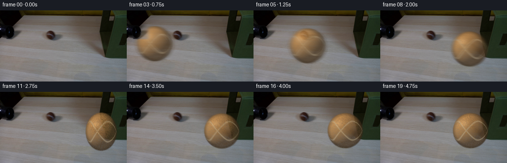
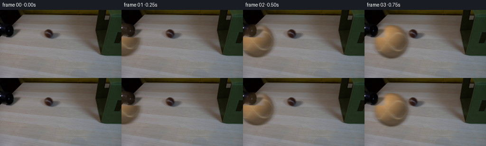
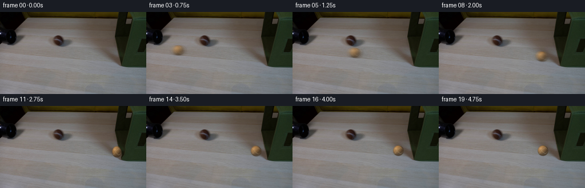
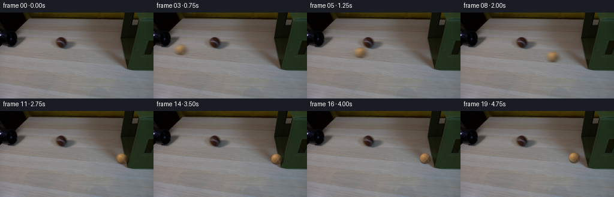
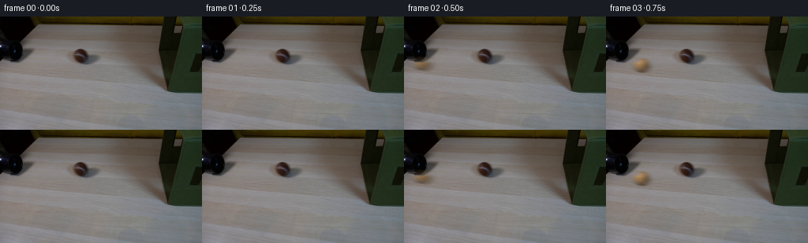
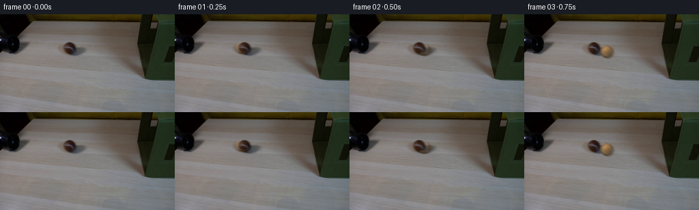
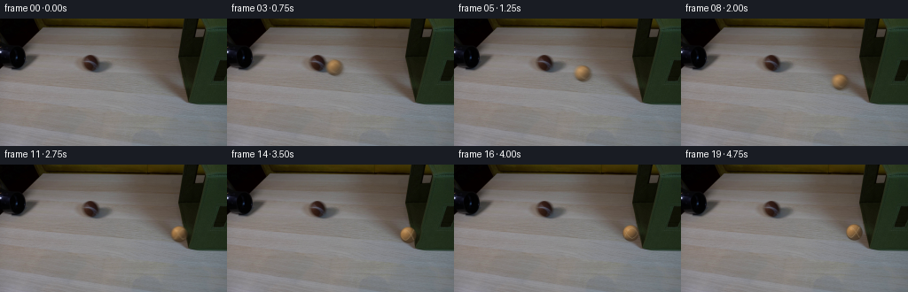
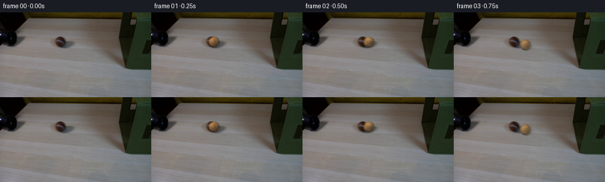
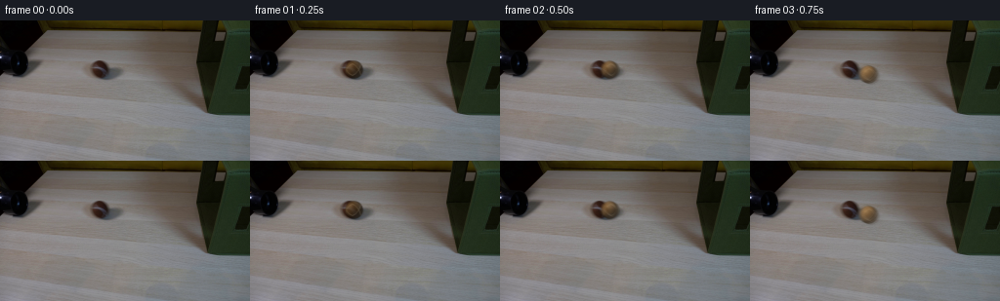

CODING AGENTS AS PIXEL WORLD MODELS
traex/DeepSeek-V4.1-Flash · 0153
点击播放 · 原生 RGB 像素
逐轮保存的候选
回放视频、检查图与代码变化。
每份候选均可单独播放。实际图片检查记录在下方工具轨迹中。
候选 01播放与检查图
点击播放 · 原生 RGB 像素


展开代码变化
--- 上一保存版本
+++ 本次保存版本
@@ -0,0 +1,362 @@
+from pathlib import Path
+
+import cv2
+import numpy as np
+from PIL import Image
+
+import artifact_io
+
+
+CASE_DIR = Path(__file__).resolve().parent
+WIDTH = 256
+HEIGHT = 144
+FRAMES = 20
+FPS = 4
+BALL_RADIUS = 8.8
+CONTACT_Y = 80.5
+BOX_CONTACT_X = 214.0
+
+
+def smoothstep(edge0, edge1, values):
+ t = np.clip((values - edge0) / (edge1 - edge0), 0.0, 1.0)
+ return t * t * (3.0 - 2.0 * t)
+
+
+def ball_positions():
+ # The ball is hidden at frame zero. It enters below the tube lip, crosses
+ # the table, compresses against the box, then rebounds and settles.
+ x = np.array(
+ [
+ -22.0,
+ 4.0,
+ 30.0,
+ 57.0,
+ 84.0,
+ 110.0,
+ 136.0,
+ 160.0,
+ 181.0,
+ 196.0,
+ 204.0,
+ 204.8,
+ 202.2,
+ 197.3,
+ 192.5,
+ 188.6,
+ 185.7,
+ 183.8,
+ 183.0,
+ 183.3,
+ ],
+ dtype=np.float64,
+ )
+ y = 63.1 + 0.0852 * x
+ return x, y
+
+
+def deformation_amplitudes():
+ return np.array(
+ [
+ 0.0,
+ 0.0,
+ 0.0,
+ 0.0,
+ 0.0,
+ 0.0,
+ 0.0,
+ 0.0,
+ 0.0,
+ 0.8,
+ 2.4,
+ 3.1,
+ 2.2,
+ 1.3,
+ 0.6,
+ 0.25,
+ 0.08,
+ 0.0,
+ 0.0,
+ 0.0,
+ ],
+ dtype=np.float64,
+ )
+
+
+def deform_fabric_box(image, amplitude):
+ if amplitude < 0.04:
+ return image.copy()
+
+ yy, xx = np.mgrid[0:HEIGHT, 0:WIDTH].astype(np.float32)
+ vertical = np.exp(-((yy - CONTACT_Y) / 8.0) ** 4)
+ edge_weight = smoothstep(203.0, 214.0, xx)
+ interior_falloff = np.exp(-np.maximum(xx - 214.0, 0.0) / 24.0)
+ displacement = amplitude * vertical * edge_weight * interior_falloff
+
+ map_x = np.ascontiguousarray(xx - displacement, dtype=np.float32)
+ map_y = np.ascontiguousarray(yy, dtype=np.float32)
+ warped = cv2.remap(
+ image,
+ map_x,
+ map_y,
+ interpolation=cv2.INTER_CUBIC,
+ borderMode=cv2.BORDER_REFLECT_101,
+ )
+
+ # Blend only the local contact strip to avoid resampling the whole scene.
+ blend = np.exp(-((yy - CONTACT_Y) / 10.5) ** 6)
+ blend *= smoothstep(199.0, 207.0, xx) * (1.0 - smoothstep(229.0, 242.0, xx))
+ blend = cv2.GaussianBlur(blend.astype(np.float32), (0, 0), 0.65)
+ return image * (1.0 - blend[..., None]) + warped * blend[..., None]
+
+
+def add_fabric_crease(image, amplitude):
+ if amplitude < 0.2:
+ return image
+
+ yy, xx = np.mgrid[0:HEIGHT, 0:WIDTH].astype(np.float32)
+ edge_x = 213.0 + amplitude * np.exp(-((yy - CONTACT_Y) / 8.0) ** 4)
+ crescent = np.exp(-((xx - edge_x) / 1.15) ** 2)
+ crescent *= np.exp(-((yy - CONTACT_Y) / 5.5) ** 4)
+ crescent *= smoothstep(208.0, 214.0, xx)
+ crescent = cv2.GaussianBlur(crescent.astype(np.float32), (0, 0), 0.45)
+
+ strength = min(0.26, 0.075 * amplitude)
+ shade = np.array([0.78, 0.82, 0.74], dtype=np.float32)
+ return image * (1.0 - strength * crescent[..., None]) + image * shade * (
+ strength * crescent[..., None]
+ )
+
+
+def make_texture():
+ rng = np.random.default_rng(153)
+ fine = rng.random((384, 384), dtype=np.float32)
+ coarse = rng.random((96, 96), dtype=np.float32)
+ coarse = cv2.resize(coarse, (384, 384), interpolation=cv2.INTER_CUBIC)
+ return 0.62 * fine + 0.38 * coarse
+
+
+TEXTURE = make_texture()
+
+
+def sample_ball_texture(lon, lat, roll_phase):
+ tex_size = TEXTURE.shape[1]
+ u = np.mod((lon / (2.0 * np.pi) + roll_phase / (2.0 * np.pi)) * tex_size, tex_size)
+ v = np.mod((lat / np.pi + 0.5) * tex_size, tex_size)
+ sampled = cv2.remap(
+ TEXTURE,
+ u.astype(np.float32),
+ v.astype(np.float32),
+ interpolation=cv2.INTER_LINEAR,
+ borderMode=cv2.BORDER_WRAP,
+ )
+ return sampled
+
+
+def render_ball(radius_x, radius_y, roll_phase):
+ ss = 4
+ margin = 2.6
+ half_w = int(np.ceil((radius_x + margin) * ss))
+ half_h = int(np.ceil((radius_y + margin) * ss))
+ yy, xx = np.mgrid[-half_h : half_h + 1, -half_w : half_w + 1].astype(np.float32)
+ px = xx / (radius_x * ss)
+ py = yy / (radius_y * ss)
+
+ rho2 = px * px + py * py
+ inside = rho2 <= 1.0
+ nz = np.sqrt(np.clip(1.0 - rho2, 0.0, 1.0))
+ nx = px
+ ny = py
+
+ lon = np.arctan2(nx, nz + 1e-5)
+ lat = np.arcsin(np.clip(ny, -1.0, 1.0))
+ texture = sample_ball_texture(lon, lat, roll_phase)
+
+ light = np.array([-0.56, -0.63, 0.54], dtype=np.float32)
+ light /= np.linalg.norm(light)
+ diffuse = np.clip(nx * light[0] + ny * light[1] + nz * light[2], 0.0, 1.0)
+
+ # Warm brown felt with a subdued olive cast, matching the photographic scene.
+ base = np.array([143.0, 101.0, 52.0], dtype=np.float32)
+ ambient = np.array([31.0, 24.0, 17.0], dtype=np.float32)
+ illumination = 0.29 + 0.92 * diffuse
+ color = base[None, None, :] * illumination[..., None] + ambient
+
+ felt_variation = (texture - 0.5) * 17.0
+ color += felt_variation[..., None] * np.array([0.95, 0.84, 0.60], dtype=np.float32)
+
+ # Two pale stitched seam curves, with a small amount of fuzz bleeding around them.
+ seam_wave = 0.57 * np.sin(2.0 * lon + 0.52)
+ seam_dist = np.minimum(np.abs(lat - seam_wave), np.abs(lat + seam_wave))
+ seam = np.exp(-(seam_dist / 0.052) ** 2)
+ seam *= smoothstep(0.02, 0.18, nz)
+ seam_color = np.array([211.0, 192.0, 151.0], dtype=np.float32)
+ color = color * (1.0 - 0.47 * seam[..., None]) + seam_color * (0.47 * seam[..., None])
+
+ # Small, slightly broad highlight consistent with the table's upper-left light.
+ spec_angle = np.exp(
+ -(
+ ((nx + 0.36) / 0.22) ** 2
+ + ((ny + 0.42) / 0.18) ** 2
+ )
+ )
+ spec = 34.0 * spec_angle * (0.35 + 0.65 * nz)
+ color += spec[..., None] * np.array([1.0, 0.93, 0.78], dtype=np.float32)
+
+ # Dark rim and a restrained cool bounce from the table.
+ rim = np.clip((rho2 - 0.68) / 0.32, 0.0, 1.0)
+ color *= (1.0 - 0.27 * rim[..., None])
+ bounce = np.clip((ny - 0.12) / 0.88, 0.0, 1.0) * np.clip(1.0 - rho2, 0.0, 1.0)
+ color += bounce[..., None] * np.array([5.0, 6.0, 7.0], dtype=np.float32)
+
+ # A fine, uneven felt edge rather than a hard vector silhouette.
+ edge = smoothstep(1.055, 0.965, np.sqrt(rho2))
+ fuzzy = np.clip(0.78 + 0.22 * (texture - 0.5) * 2.0, 0.62, 1.0)
+ alpha = edge * fuzzy
+ alpha[~inside & (rho2 > 1.055**2)] = 0.0
+
+ alpha_small = cv2.resize(alpha, (half_w * 2 + 1, half_h * 2 + 1), interpolation=cv2.INTER_AREA)
+ color_small = cv2.resize(
+ color,
+ (half_w * 2 + 1, half_h * 2 + 1),
+ interpolation=cv2.INTER_AREA,
+ )
+ alpha_small = np.clip(alpha_small, 0.0, 1.0)
+ return color_small, alpha_small
+
+
+def add_shadow(image, xs, ys, surface_y, strength=1.0):
+ ss = 3
+ span_x = 14.0
+ span_y = 5.2
+ x0 = int(np.floor(min(xs) - span_x - 5.0))
+ x1 = int(np.ceil(max(xs) + span_x + 5.0))
+ y0 = int(np.floor(surface_y - span_y - 5.0))
+ y1 = int(np.ceil(surface_y + span_y + 5.0))
+ x0 = max(0, x0)
+ y0 = max(0, y0)
+ x1 = min(WIDTH, x1)
+ y1 = min(HEIGHT, y1)
+ if x1 <= x0 or y1 <= y0:
+ return image
+
+ yy, xx = np.mgrid[y0:y1, x0:x1].astype(np.float32)
+ acc = np.zeros((y1 - y0, x1 - x0), dtype=np.float32)
+ for sx, sy in zip(xs, ys):
+ dx = (xx - (sx + 2.5)) / span_x
+ dy = (yy - (sy + 2.6)) / span_y
+ acc += np.exp(-(dx * dx + dy * dy) * 1.9)
+ acc /= max(1, len(xs))
+ acc = cv2.GaussianBlur(acc, (0, 0), 1.1)
+ acc *= 0.34 * strength
+
+ patch = image[y0:y1, x0:x1].astype(np.float32)
+ shadow_color = np.array([0.70, 0.64, 0.57], dtype=np.float32)
+ shaded = patch * (1.0 - acc[..., None]) + patch * shadow_color * acc[..., None]
+ image[y0:y1, x0:x1] = np.clip(shaded, 0, 255).astype(np.uint8)
+ return image
+
+
+def composite_ball(image, positions, roll_phase, radius_x, radius_y):
+ color, alpha = render_ball(radius_x, radius_y, roll_phase)
+ h, w = alpha.shape
+ accum_rgb = np.zeros((HEIGHT, WIDTH, 3), dtype=np.float32)
+ accum_a = np.zeros((HEIGHT, WIDTH), dtype=np.float32)
+ weight_sum = 0.0
+
+ weights = np.array([0.08, 0.15, 0.24, 0.30, 0.24, 0.15, 0.08], dtype=np.float32)
+ for weight, (cx, cy) in zip(weights, positions):
+ left = int(np.floor(cx - w / 2.0))
+ top = int(np.floor(cy - h / 2.0))
+ ax0 = max(0, left)
+ ay0 = max(0, top)
+ ax1 = min(WIDTH, left + w)
+ ay1 = min(HEIGHT, top + h)
+ if ax1 <= ax0 or ay1 <= ay0:
+ continue
+ bx0 = ax0 - left
+ by0 = ay0 - top
+ bx1 = bx0 + (ax1 - ax0)
+ by1 = by0 + (ay1 - ay0)
+ a = alpha[by0:by1, bx0:bx1] * weight
+ rgb = color[by0:by1, bx0:bx1]
+ accum_a[ay0:ay1, ax0:ax1] += a
+ accum_rgb[ay0:ay1, ax0:ax1] += rgb * a[..., None]
+ weight_sum += weight
+
+ valid = accum_a > 1e-5
+ accum_rgb[valid] /= accum_a[valid, None]
+ accum_a = np.clip(accum_a / max(weight_sum, 1e-5), 0.0, 1.0)
+
+ # The tube lip slightly clips the first visible part of the ball.
+ yy, xx = np.mgrid[0:HEIGHT, 0:WIDTH].astype(np.float32)
+ lip = (1.0 - smoothstep(56.0, 59.5, yy)) * (1.0 - smoothstep(36.0, 50.0, xx))
+ accum_a *= 1.0 - 0.72 * lip
+
+ out = image.astype(np.float32)
+ out = out * (1.0 - accum_a[..., None]) + accum_rgb * accum_a[..., None]
+ return np.clip(out, 0, 255).astype(np.uint8)
+
+
+def main():
+ first = np.asarray(Image.open(CASE_DIR / "first_frame.png").convert("RGB"), dtype=np.uint8)
+ assert first.shape == (HEIGHT, WIDTH, 3)
+
+ x, y = ball_positions()
+ deform = deformation_amplitudes()
+ frames = np.empty((FRAMES, HEIGHT, WIDTH, 3), dtype=np.uint8)
+ frames[0] = first
+
+ cumulative_distance = 0.0
+ for frame_index in range(1, FRAMES):
+ background = deform_fabric_box(first, deform[frame_index])
+ background = add_fabric_crease(background, deform[frame_index])
+
+ previous_x = x[frame_index - 1]
+ next_x = x[min(frame_index + 1, FRAMES - 1)]
+ velocity = (next_x - previous_x) * 0.5
+ shutter = 0.27 if frame_index < 12 else 0.18
+ offset = velocity * shutter
+ sub_x = np.linspace(x[frame_index] - offset, x[frame_index] + offset, 7)
+ sub_y = 63.1 + 0.0852 * sub_x
+
+ # Shadow strength rises on contact and remains slightly deeper at rest.
+ strength = 0.88
+ if 9 <= frame_index <= 14:
+ strength = 1.2
+ surface_y = y[frame_index] + BALL_RADIUS
+ background = add_shadow(
+ background,
+ sub_x,
+ sub_y,
+ surface_y,
+ strength=strength,
+ )
+
+ distance_step = abs(x[frame_index] - x[frame_index - 1])
+ cumulative_distance += distance_step
+ roll_phase = cumulative_distance / BALL_RADIUS * 1.65
+
+ radius_x = BALL_RADIUS
+ radius_y = BALL_RADIUS
+ if frame_index in (10, 11):
+ radius_x = 8.15 if frame_index == 10 else 7.8
+ radius_y = 9.35 if frame_index == 10 else 9.55
+
+ # Compression pulls the sprite's center very slightly away from the face.
+ draw_x = x[frame_index]
+ if frame_index in (10, 11):
+ draw_x -= 0.55
+ frame = composite_ball(
+ background,
+ list(zip(sub_x, sub_y)),
+ roll_phase,
+ radius_x,
+ radius_y,
+ )
+ frames[frame_index] = frame
+
+ artifact_io.save(frames, CASE_DIR)
+
+
+if __name__ == "__main__":
+ main()
候选 02播放与检查图
点击播放 · 原生 RGB 像素

展开代码变化
--- 上一保存版本
+++ 本次保存版本
@@ -154,9 +154,11 @@
def render_ball(radius_x, radius_y, roll_phase):
ss = 4
- margin = 2.6
- half_w = int(np.ceil((radius_x + margin) * ss))
- half_h = int(np.ceil((radius_y + margin) * ss))
+ margin = 1.25
+ half_w_small = int(np.ceil(radius_x + margin))
+ half_h_small = int(np.ceil(radius_y + margin))
+ half_w = half_w_small * ss
+ half_h = half_h_small * ss
yy, xx = np.mgrid[-half_h : half_h + 1, -half_w : half_w + 1].astype(np.float32)
px = xx / (radius_x * ss)
py = yy / (radius_y * ss)
@@ -214,10 +216,11 @@
alpha = edge * fuzzy
alpha[~inside & (rho2 > 1.055**2)] = 0.0
- alpha_small = cv2.resize(alpha, (half_w * 2 + 1, half_h * 2 + 1), interpolation=cv2.INTER_AREA)
+ small_size = (half_w_small * 2 + 1, half_h_small * 2 + 1)
+ alpha_small = cv2.resize(alpha, small_size, interpolation=cv2.INTER_AREA)
color_small = cv2.resize(
color,
- (half_w * 2 + 1, half_h * 2 + 1),
+ small_size,
interpolation=cv2.INTER_AREA,
)
alpha_small = np.clip(alpha_small, 0.0, 1.0)
候选 03播放与检查图
点击播放 · 原生 RGB 像素


展开代码变化
--- 上一保存版本
+++ 本次保存版本
@@ -27,30 +27,30 @@
# the table, compresses against the box, then rebounds and settles.
x = np.array(
[
- -22.0,
- 4.0,
- 30.0,
- 57.0,
- 84.0,
- 110.0,
- 136.0,
- 160.0,
- 181.0,
- 196.0,
- 204.0,
- 204.8,
- 202.2,
- 197.3,
- 192.5,
- 188.6,
- 185.7,
- 183.8,
- 183.0,
- 183.3,
+ -20.0,
+ -20.0,
+ 24.0,
+ 46.0,
+ 68.0,
+ 90.0,
+ 112.0,
+ 134.0,
+ 155.0,
+ 174.0,
+ 191.0,
+ 203.8,
+ 208.4,
+ 208.6,
+ 205.6,
+ 201.4,
+ 197.5,
+ 194.2,
+ 191.8,
+ 190.4,
],
dtype=np.float64,
)
- y = 63.1 + 0.0852 * x
+ y = 60.0 + 0.1112 * (x - 20.0)
return x, y
@@ -66,7 +66,9 @@
0.0,
0.0,
0.0,
- 0.8,
+ 0.0,
+ 0.0,
+ 0.45,
2.4,
3.1,
2.2,
@@ -75,8 +77,6 @@
0.25,
0.08,
0.0,
- 0.0,
- 0.0,
],
dtype=np.float64,
)
@@ -88,8 +88,8 @@
yy, xx = np.mgrid[0:HEIGHT, 0:WIDTH].astype(np.float32)
vertical = np.exp(-((yy - CONTACT_Y) / 8.0) ** 4)
- edge_weight = smoothstep(203.0, 214.0, xx)
- interior_falloff = np.exp(-np.maximum(xx - 214.0, 0.0) / 24.0)
+ edge_weight = smoothstep(206.0, 217.0, xx)
+ interior_falloff = np.exp(-np.maximum(xx - 217.0, 0.0) / 24.0)
displacement = amplitude * vertical * edge_weight * interior_falloff
map_x = np.ascontiguousarray(xx - displacement, dtype=np.float32)
@@ -104,7 +104,7 @@
# Blend only the local contact strip to avoid resampling the whole scene.
blend = np.exp(-((yy - CONTACT_Y) / 10.5) ** 6)
- blend *= smoothstep(199.0, 207.0, xx) * (1.0 - smoothstep(229.0, 242.0, xx))
+ blend *= smoothstep(202.0, 211.0, xx) * (1.0 - smoothstep(232.0, 246.0, xx))
blend = cv2.GaussianBlur(blend.astype(np.float32), (0, 0), 0.65)
return image * (1.0 - blend[..., None]) + warped * blend[..., None]
@@ -114,10 +114,10 @@
return image
yy, xx = np.mgrid[0:HEIGHT, 0:WIDTH].astype(np.float32)
- edge_x = 213.0 + amplitude * np.exp(-((yy - CONTACT_Y) / 8.0) ** 4)
+ edge_x = 217.0 + amplitude * np.exp(-((yy - CONTACT_Y) / 8.0) ** 4)
crescent = np.exp(-((xx - edge_x) / 1.15) ** 2)
crescent *= np.exp(-((yy - CONTACT_Y) / 5.5) ** 4)
- crescent *= smoothstep(208.0, 214.0, xx)
+ crescent *= smoothstep(211.0, 218.0, xx)
crescent = cv2.GaussianBlur(crescent.astype(np.float32), (0, 0), 0.45)
strength = min(0.26, 0.075 * amplitude)
@@ -187,7 +187,7 @@
color += felt_variation[..., None] * np.array([0.95, 0.84, 0.60], dtype=np.float32)
# Two pale stitched seam curves, with a small amount of fuzz bleeding around them.
- seam_wave = 0.57 * np.sin(2.0 * lon + 0.52)
+ seam_wave = 0.68 * np.sin(2.0 * (lon + roll_phase) + 0.52)
seam_dist = np.minimum(np.abs(lat - seam_wave), np.abs(lat + seam_wave))
seam = np.exp(-(seam_dist / 0.052) ** 2)
seam *= smoothstep(0.02, 0.18, nz)
@@ -320,11 +320,11 @@
shutter = 0.27 if frame_index < 12 else 0.18
offset = velocity * shutter
sub_x = np.linspace(x[frame_index] - offset, x[frame_index] + offset, 7)
- sub_y = 63.1 + 0.0852 * sub_x
+ sub_y = 60.0 + 0.1112 * (sub_x - 20.0)
# Shadow strength rises on contact and remains slightly deeper at rest.
strength = 0.88
- if 9 <= frame_index <= 14:
+ if 11 <= frame_index <= 16:
strength = 1.2
surface_y = y[frame_index] + BALL_RADIUS
background = add_shadow(
@@ -341,13 +341,13 @@
radius_x = BALL_RADIUS
radius_y = BALL_RADIUS
- if frame_index in (10, 11):
- radius_x = 8.15 if frame_index == 10 else 7.8
- radius_y = 9.35 if frame_index == 10 else 9.55
+ if frame_index in (12, 13):
+ radius_x = 8.15 if frame_index == 12 else 7.8
+ radius_y = 9.35 if frame_index == 12 else 9.55
# Compression pulls the sprite's center very slightly away from the face.
draw_x = x[frame_index]
- if frame_index in (10, 11):
+ if frame_index in (12, 13):
draw_x -= 0.55
frame = composite_ball(
background,
候选 04播放与检查图
点击播放 · 原生 RGB 像素

展开代码变化
--- 上一保存版本
+++ 本次保存版本
@@ -27,30 +27,54 @@
# the table, compresses against the box, then rebounds and settles.
x = np.array(
[
- -20.0,
- -20.0,
- 24.0,
- 46.0,
- 68.0,
- 90.0,
- 112.0,
+ 94.0,
+ 99.0,
+ 110.0,
+ 122.0,
134.0,
- 155.0,
- 174.0,
- 191.0,
- 203.8,
- 208.4,
- 208.6,
- 205.6,
- 201.4,
+ 146.0,
+ 158.0,
+ 169.5,
+ 180.0,
+ 189.5,
197.5,
- 194.2,
- 191.8,
- 190.4,
+ 202.8,
+ 206.3,
+ 207.0,
+ 205.3,
+ 202.7,
+ 200.3,
+ 198.4,
+ 197.1,
+ 196.3,
],
dtype=np.float64,
)
- y = 60.0 + 0.1112 * (x - 20.0)
+ y = np.array(
+ [
+ 49.0,
+ 49.5,
+ 52.6,
+ 56.0,
+ 59.4,
+ 62.8,
+ 66.1,
+ 69.4,
+ 72.4,
+ 75.2,
+ 77.5,
+ 79.0,
+ 80.0,
+ 80.2,
+ 79.7,
+ 78.9,
+ 78.2,
+ 77.7,
+ 77.4,
+ 77.2,
+ ],
+ dtype=np.float64,
+ )
return x, y
@@ -259,7 +283,7 @@
return image
-def composite_ball(image, positions, roll_phase, radius_x, radius_y):
+def composite_ball(image, positions, roll_phase, radius_x, radius_y, frame_index):
color, alpha = render_ball(radius_x, radius_y, roll_phase)
h, w = alpha.shape
accum_rgb = np.zeros((HEIGHT, WIDTH, 3), dtype=np.float32)
@@ -292,8 +316,11 @@
# The tube lip slightly clips the first visible part of the ball.
yy, xx = np.mgrid[0:HEIGHT, 0:WIDTH].astype(np.float32)
- lip = (1.0 - smoothstep(56.0, 59.5, yy)) * (1.0 - smoothstep(36.0, 50.0, xx))
- accum_a *= 1.0 - 0.72 * lip
+ if frame_index <= 2:
+ # The first visible sliver is clipped by the tube's near lip.
+ lip = 1.0 - smoothstep(51.0 + 1.8 * frame_index, 55.0 + 1.8 * frame_index, yy)
+ lip *= smoothstep(88.0, 94.0, xx) * (1.0 - smoothstep(111.0, 117.0, xx))
+ accum_a *= 1.0 - 0.88 * lip
out = image.astype(np.float32)
out = out * (1.0 - accum_a[..., None]) + accum_rgb * accum_a[..., None]
@@ -320,7 +347,12 @@
shutter = 0.27 if frame_index < 12 else 0.18
offset = velocity * shutter
sub_x = np.linspace(x[frame_index] - offset, x[frame_index] + offset, 7)
- sub_y = 60.0 + 0.1112 * (sub_x - 20.0)
+ path_slope = (
+ y[min(frame_index + 1, FRAMES - 1)] - y[frame_index - 1]
+ ) / max(
+ 1e-5, x[min(frame_index + 1, FRAMES - 1)] - x[frame_index - 1]
+ )
+ sub_y = y[frame_index] + path_slope * (sub_x - x[frame_index])
# Shadow strength rises on contact and remains slightly deeper at rest.
strength = 0.88
@@ -355,6 +387,7 @@
roll_phase,
radius_x,
radius_y,
+ frame_index,
)
frames[frame_index] = frame
候选 05播放与检查图
点击播放 · 原生 RGB 像素

展开代码变化
--- 上一保存版本
+++ 本次保存版本
@@ -373,6 +373,10 @@
radius_x = BALL_RADIUS
radius_y = BALL_RADIUS
+ emergence_radii = {1: 5.8, 2: 7.3, 3: 8.35}
+ if frame_index in emergence_radii:
+ radius_x = emergence_radii[frame_index]
+ radius_y = emergence_radii[frame_index]
if frame_index in (12, 13):
radius_x = 8.15 if frame_index == 12 else 7.8
radius_y = 9.35 if frame_index == 12 else 9.55
候选 06播放与检查图

候选 07播放与检查图
点击播放 · 原生 RGB 像素
展开代码变化
--- 上一保存版本
+++ 本次保存版本
@@ -283,7 +283,7 @@
return image
-def composite_ball(image, positions, roll_phase, radius_x, radius_y, frame_index):
+def composite_ball(image, positions, roll_phase, radius_x, radius_y, reveal=1.0):
color, alpha = render_ball(radius_x, radius_y, roll_phase)
h, w = alpha.shape
accum_rgb = np.zeros((HEIGHT, WIDTH, 3), dtype=np.float32)
@@ -316,11 +316,13 @@
# The tube lip slightly clips the first visible part of the ball.
yy, xx = np.mgrid[0:HEIGHT, 0:WIDTH].astype(np.float32)
- if frame_index <= 2:
- # The first visible sliver is clipped by the tube's near lip.
- lip = 1.0 - smoothstep(51.0 + 1.8 * frame_index, 55.0 + 1.8 * frame_index, yy)
- lip *= smoothstep(88.0, 94.0, xx) * (1.0 - smoothstep(111.0, 117.0, xx))
- accum_a *= 1.0 - 0.88 * lip
+ if reveal < 1.0:
+ # Reveal the emerging ball through the round tube mouth, while leaving
+ # the original dark lip and tabletop highlight untouched.
+ aperture = ((xx - 103.0) / (9.0 * reveal)) ** 2
+ aperture += ((yy - 50.3) / (8.5 * reveal)) ** 2
+ aperture = smoothstep(1.08, 0.82, np.sqrt(aperture))
+ accum_a *= aperture
out = image.astype(np.float32)
out = out * (1.0 - accum_a[..., None]) + accum_rgb * accum_a[..., None]
@@ -373,10 +375,9 @@
radius_x = BALL_RADIUS
radius_y = BALL_RADIUS
- emergence_radii = {1: 5.8, 2: 7.3, 3: 8.35}
- if frame_index in emergence_radii:
- radius_x = emergence_radii[frame_index]
- radius_y = emergence_radii[frame_index]
+ reveal = 1.0
+ if frame_index in (1, 2, 3):
+ reveal = {1: 0.54, 2: 0.73, 3: 0.88}[frame_index]
if frame_index in (12, 13):
radius_x = 8.15 if frame_index == 12 else 7.8
radius_y = 9.35 if frame_index == 12 else 9.55
@@ -391,7 +392,7 @@
roll_phase,
radius_x,
radius_y,
- frame_index,
+ reveal,
)
frames[frame_index] = frame
候选 08播放与检查图
候选 09播放与检查图
点击播放 · 原生 RGB 像素


展开代码变化
--- 上一保存版本
+++ 本次保存版本
@@ -27,9 +27,9 @@
# the table, compresses against the box, then rebounds and settles.
x = np.array(
[
- 94.0,
- 99.0,
- 110.0,
+ 103.0,
+ 107.0,
+ 113.0,
122.0,
134.0,
146.0,
@@ -52,9 +52,9 @@
)
y = np.array(
[
- 49.0,
- 49.5,
- 52.6,
+ 50.3,
+ 50.6,
+ 51.2,
56.0,
59.4,
62.8,
@@ -283,7 +283,7 @@
return image
-def composite_ball(image, positions, roll_phase, radius_x, radius_y, reveal=1.0):
+def composite_ball(image, positions, roll_phase, radius_x, radius_y):
color, alpha = render_ball(radius_x, radius_y, roll_phase)
h, w = alpha.shape
accum_rgb = np.zeros((HEIGHT, WIDTH, 3), dtype=np.float32)
@@ -316,14 +316,6 @@
# The tube lip slightly clips the first visible part of the ball.
yy, xx = np.mgrid[0:HEIGHT, 0:WIDTH].astype(np.float32)
- if reveal < 1.0:
- # Reveal the emerging ball through the round tube mouth, while leaving
- # the original dark lip and tabletop highlight untouched.
- aperture = ((xx - 103.0) / (9.0 * reveal)) ** 2
- aperture += ((yy - 50.3) / (8.5 * reveal)) ** 2
- aperture = smoothstep(1.08, 0.82, np.sqrt(aperture))
- accum_a *= aperture
-
out = image.astype(np.float32)
out = out * (1.0 - accum_a[..., None]) + accum_rgb * accum_a[..., None]
return np.clip(out, 0, 255).astype(np.uint8)
@@ -375,9 +367,6 @@
radius_x = BALL_RADIUS
radius_y = BALL_RADIUS
- reveal = 1.0
- if frame_index in (1, 2, 3):
- reveal = {1: 0.54, 2: 0.73, 3: 0.88}[frame_index]
if frame_index in (12, 13):
radius_x = 8.15 if frame_index == 12 else 7.8
radius_y = 9.35 if frame_index == 12 else 9.55
@@ -392,7 +381,6 @@
roll_phase,
radius_x,
radius_y,
- reveal,
)
frames[frame_index] = frame
候选 10播放与检查图
点击播放 · 原生 RGB 像素


展开代码变化
--- 上一保存版本
+++ 本次保存版本
@@ -176,7 +176,7 @@
return sampled
-def render_ball(radius_x, radius_y, roll_phase):
+def render_ball(radius_x, radius_y, roll_phase, light_factor):
ss = 4
margin = 1.25
half_w_small = int(np.ceil(radius_x + margin))
@@ -206,6 +206,7 @@
ambient = np.array([31.0, 24.0, 17.0], dtype=np.float32)
illumination = 0.29 + 0.92 * diffuse
color = base[None, None, :] * illumination[..., None] + ambient
+ color *= light_factor
felt_variation = (texture - 0.5) * 17.0
color += felt_variation[..., None] * np.array([0.95, 0.84, 0.60], dtype=np.float32)
@@ -283,8 +284,8 @@
return image
-def composite_ball(image, positions, roll_phase, radius_x, radius_y):
- color, alpha = render_ball(radius_x, radius_y, roll_phase)
+def composite_ball(image, positions, roll_phase, radius_x, radius_y, light_factor):
+ color, alpha = render_ball(radius_x, radius_y, roll_phase, light_factor)
h, w = alpha.shape
accum_rgb = np.zeros((HEIGHT, WIDTH, 3), dtype=np.float32)
accum_a = np.zeros((HEIGHT, WIDTH), dtype=np.float32)
@@ -367,6 +368,7 @@
radius_x = BALL_RADIUS
radius_y = BALL_RADIUS
+ light_factor = {1: 0.50, 2: 0.67, 3: 0.82, 4: 0.92}.get(frame_index, 1.0)
if frame_index in (12, 13):
radius_x = 8.15 if frame_index == 12 else 7.8
radius_y = 9.35 if frame_index == 12 else 9.55
@@ -381,6 +383,7 @@
roll_phase,
radius_x,
radius_y,
+ light_factor,
)
frames[frame_index] = frame
候选 11播放与检查图
点击播放 · 原生 RGB 像素

展开代码变化
--- 上一保存版本
+++ 本次保存版本
@@ -253,7 +253,6 @@
def add_shadow(image, xs, ys, surface_y, strength=1.0):
- ss = 3
span_x = 14.0
span_y = 5.2
x0 = int(np.floor(min(xs) - span_x - 5.0))
@@ -341,7 +340,10 @@
velocity = (next_x - previous_x) * 0.5
shutter = 0.27 if frame_index < 12 else 0.18
offset = velocity * shutter
- sub_x = np.linspace(x[frame_index] - offset, x[frame_index] + offset, 7)
+ draw_x = x[frame_index]
+ if frame_index in (12, 13):
+ draw_x -= 0.55
+ sub_x = np.linspace(draw_x - offset, draw_x + offset, 7)
path_slope = (
y[min(frame_index + 1, FRAMES - 1)] - y[frame_index - 1]
) / max(
@@ -373,10 +375,6 @@
radius_x = 8.15 if frame_index == 12 else 7.8
radius_y = 9.35 if frame_index == 12 else 9.55
- # Compression pulls the sprite's center very slightly away from the face.
- draw_x = x[frame_index]
- if frame_index in (12, 13):
- draw_x -= 0.55
frame = composite_ball(
background,
list(zip(sub_x, sub_y)),
候选 12播放与检查图
可观测工具轨迹
实际执行的命令与返回图片。
命令 1exit 0
/bin/bash -c "pwd && rg --files -g '"'!*.mp4'"' -g '"'!*.webm'"' -g '"'!*.mov'"' | sort"
命令 2exit 0
/bin/bash -c "sed -n '1,240p' prompt.txt"
命令 3exit 0
/bin/bash -c "sed -n '1,280p' GENERATION_RULES.md"
命令 4exit 127
/bin/bash -c "file first_frame.png && identify -verbose first_frame.png | sed -n '1,120p'"
命令 5exit 0
/bin/bash -c "sed -n '1,260p' artifact_io.py"
命令 6exit 0
/bin/bash -c "python - <<'PY'
from PIL import Image
import numpy as np
im=Image.open('first_frame.png').convert('RGB')
a=np.asarray(im)
print(im.size, im.mode, a.shape, a.dtype)
print('min',a.min((0,1)),'max',a.max((0,1)),'mean',a.mean((0,1)).round(2),'std',a.std((0,1)).round(2))
# common colors
u,c=np.unique(a.reshape(-1,3),axis=0,return_counts=True)
idx=np.argsort(c)[-30:][::-1]
for i in idx: print(tuple(u[i]),int(c[i]))
PY"命令 7exit 0
/bin/bash -c "sed -n '1,300p' player_template.html"
命令 8exit 0
/bin/bash -c "python - <<'PY' mods=['numpy','PIL','cv2','scipy','skimage','imageio','ffmpeg'] for m in mods: try: x=__import__(m); print(m,'ok',getattr(x,'__version__','')) except Exception as e: print(m,'NO',type(e).__name__,e) PY command -v ffmpeg || true command -v convert || true"
命令 9exit 0
/bin/bash -c "python - <<'PY'
from PIL import Image
import numpy as np
from scipy.cluster.vq import kmeans2
im=np.asarray(Image.open('first_frame.png').convert('RGB')).astype(np.float32)
# sample all pixels for kmeans, k 12
x=im.reshape(-1,3)
cent, lab = kmeans2(x, 14, minit='++', seed=4, iter=40)
lab=lab.reshape(im.shape[:2])
for i,c in enumerate(cent):
ys,xs=np.where(lab==i)
print(f'{i:2d} n={len(xs):5d} rgb=({c[0]:.0f},{c[1]:.0f},{c[2]:.0f}) bbox x={xs.min():3d}-{xs.max():3d} y={ys.min():3d}-{ys.max():3d} med=({np.median(xs):.0f},{np.median(ys):.0f})')
# map every 4th/8th pixel to cluster letter, brightness adjusted
chars='0123456789ABCDEF'
print('\\nCLASS MAP x step4 y step4')
for y in range(0,144,4):
print(f'{y:3d} '+''.join(chars[lab[y,x]] for x in range(0,256,4)))
PY"命令 10exit 0
/bin/bash -c "python - <<'PY'
import cv2, numpy as np
from PIL import Image
a=np.asarray(Image.open('first_frame.png').convert('RGB'))
hsv=cv2.cvtColor(a,cv2.COLOR_RGB2HSV)
# 12x12 cell summaries: mean rgb and dominant HSV / darkness
print('CELL MEAN RGB + lum, 12px blocks')
for y in range(0,144,12):
line=[]
for x in range(0,256,16):
b=a[y:y+12,x:x+16].reshape(-1,3).mean(0)
line.append(f'{int(b[0]):02x}{int(b[1]):02x}{int(b[2]):02x}')
print(f'{y:3d} '+' '.join(line))
print('\\nHSV category counts:')
H,S,V=[hsv[:,:,i] for i in range(3)]
cats={
'black':(V<45), 'dark':(V<75), 'green':(H>30)&(H<55)&(S>50)&(V>30), 'olive':(H>25)&(H<50)&(S>35)&(V<120),
'brown':(H<25)&(S>80)&(V>40), 'warm':(H<30)&(S>35)&(V>60), 'grey':(S<35)&(V>80), 'bright':(V>180)
}
for k,m in cats.items():
ys,xs=np.where(m)
print(k,len(xs),'bbox', (xs.min(),ys.min(),xs.max(),ys.max()) if len(xs) else None,'cent', (xs.mean(),ys.mean()) if len(xs) else None)
# edge bounding clusters?
gray=cv2.cvtColor(a,cv2.COLOR_RGB2GRAY)
ed=cv2.Canny(gray,40,100)
# row/col edge counts
print('edge count by y 8:', [int(ed[y:y+8].sum()/255) for y in range(0,144,8)])
print('edge count by x 16:', [int(ed[:,x:x+16].sum()/255) for x in range(0,256,16)])
PY"命令 11exit 0
/bin/bash -c "python - <<'PY'
import cv2, numpy as np
from PIL import Image
a=np.asarray(Image.open('first_frame.png').convert('RGB'))
g=cv2.cvtColor(a,cv2.COLOR_RGB2GRAY)
# Hough lines
for thresh in [30,50,70]:
ed=cv2.Canny(g,thresh,thresh*2)
lines=cv2.HoughLinesP(ed,1,np.pi/180,threshold=18,minLineLength=20,maxLineGap=5)
print('\\nCanny',thresh,'n',0 if lines is None else len(lines))
if lines is not None:
ls=[]
for x1,y1,x2,y2 in lines[:,0]:
length=np.hypot(x2-x1,y2-y1); ang=np.degrees(np.arctan2(y2-y1,x2-x1))
ls.append((length,ang,x1,y1,x2,y2))
for t in sorted(ls,reverse=True)[:25]: print(' len=%5.1f ang=%6.1f (%3d,%3d)-(%3d,%3d)'%t)
# line-ish regions via horizontal gradient profiles
print('\\nrow mean rgb every 4')
for y in range(0,144,4):
b=a[y:y+4].mean((0,1)); print(f'{y:3d} '+','.join(f'{v:5.1f}' for v in b))
print('\\ncol mean rgb every 8')
for x in range(0,256,8):
b=a[:,x:x+8].mean((0,1)); print(f'{x:3d} '+','.join(f'{v:5.1f}' for v in b))
PY"命令 12exit 0
/bin/bash -c 'command -v chafa || true command -v viu || true command -v jp2 || true command -v img2txt || true command -v python ls -la'
命令 13exit 0
/bin/bash -c "python - <<'PY'
from PIL import Image
import numpy as np
im=np.asarray(Image.open('first_frame.png').convert('RGB')).astype(float)
g=im.mean(2)
chars=' .:-=+*#%@'
# use adaptive contrast but fixed 0-180
for y in range(0,144,2):
s=''
for x in range(0,256,2):
v=g[y:y+2,x:x+2].mean()
s+=chars[min(9,int(v/180*10))]
print(f'{y:3d} {s}')
PY"命令 14exit 0
/bin/bash -c "python - <<'PY'
from PIL import Image
import numpy as np
im=np.asarray(Image.open('first_frame.png').convert('RGB')).astype(float)
# color chars identify red/green/blue dominance and brightness
for y in range(0,100,2):
s=''
for x in range(0,256,2):
r,g,b=im[y:y+2,x:x+2].mean((0,1)); v=(r+g+b)/3
if v<20: c=' '
elif g>r*1.15 and g>b*1.12: c='G' if v<90 else 'g'
elif r>g*1.15 and r>b*1.15: c='R' if v<100 else 'r'
elif r>g*1.08 and g>b*1.1: c='O' if v<100 else 'o'
elif b>r*1.08: c='B'
elif v<55: c='.'
elif v<90: c=':'
elif v<125: c='+'
else: c='#'
s+=c
print(f'{y:3d} {s}')
PY"命令 15exit 0
/bin/bash -c "python - <<'PY'
import cv2, numpy as np
from PIL import Image
a=np.asarray(Image.open('first_frame.png').convert('RGB'))
g=cv2.cvtColor(a,cv2.COLOR_RGB2GRAY)
for t in [15,20,25,30,35,40,45,50,60]:
m=(g<t).astype(np.uint8)
n,lab,stats,cent=cv2.connectedComponentsWithStats(m,8)
comps=sorted([(s[4],s[0],s[1],s[2],s[3],i) for i,s in enumerate(stats[1:],1)], reverse=True)[:8]
print('thr',t,'pixels',m.sum(),'comps',[(x[0],tuple(x[1:5])) for x in comps[:6]])
# row run ranges of dark in selected rows
for y in [0,5,10,15,20,25,30,35,40,45,50,55,60,65,70,75,80,85,90,95,100]:
m=g[y]<45
runs=[]; st=None
for x,v in enumerate(np.r_[m,False]):
if v and st is None: st=x
elif not v and st is not None: runs.append((st,x-1)); st=None
print(y,runs)
PY"命令 16exit 0
/bin/bash -c "python - <<'PY'
import cv2, numpy as np
from PIL import Image
a=np.asarray(Image.open('first_frame.png').convert('RGB'))
# sample patches
pts=[(10,20),(50,20),(100,20),(160,20),(190,20),(220,20),(240,20),
(20,45),(50,45),(80,45),(120,45),(160,45),(190,45),(210,45),(230,45),(250,45),
(10,55),(50,55),(80,55),(120,55),(160,55),(190,55),(210,55),(230,55),(250,55),
(10,70),(50,70),(100,70),(150,70),(190,70),(210,70),(230,70),(250,70),
(10,90),(50,90),(100,90),(150,90),(190,90),(210,90),(230,90),(250,90),
(10,110),(50,110),(100,110),(150,110),(190,110),(230,110),(250,110)]
for x,y in pts:
p=a[max(0,y-2):y+3,max(0,x-2):x+3].reshape(-1,3)
print(f'({x:3},{y:3}) med={tuple(np.median(p,0).astype(int))} mean={tuple(p.mean(0).astype(int))} min={tuple(p.min(0))} max={tuple(p.max(0))}')
# grid of RGB in upper right box likely
print('\\nupper right samples')
for y in range(10,101,10):
print(y, [tuple(a[y,x]) for x in range(200,256,8)])
PY"命令 17exit 0
/bin/bash -c "python - <<'PY'
from PIL import Image
import numpy as np
im=np.asarray(Image.open('first_frame.png').convert('RGB')).astype(float)
# Generate quantized pseudo-color ANSI blocks? Print RGB patch groups with symbols from actual coordinates.
# detect smooth wood region lines etc.
# print color map at 2x2 with 16 categories derived hue+brightness, but focus all image
chars='0123456789abcdef'
# manually hue category quantization
for y in range(0,144,3):
s=''
for x in range(0,256,2):
r,g,b=im[y:y+3,x:x+2].mean((0,1)); mx=max(r,g,b); mn=min(r,g,b); v=(r+g+b)/3
if v<18:c=' '
elif v<40:c='.'
elif v<70:c=':'
elif v<100:c='-'
elif v<130:c='+'
elif v<160:c='*'
else:c='#'
# uppercase color category green
if g>r*1.16 and g>b*1.1: c='G' if v<100 else 'g'
if r>g*1.15 and g>b*1.15: c='R' if v<120 else 'r'
s+=c
print(f'{y:3d} {s}')
PY"命令 18exit 0
/bin/bash -c "python - <<'PY'
import cv2, numpy as np
from PIL import Image
a=np.asarray(Image.open('first_frame.png').convert('RGB'))
g=cv2.cvtColor(a,cv2.COLOR_RGB2GRAY)
for p2 in [8,10,12,15,20,25,30]:
c=cv2.HoughCircles(cv2.GaussianBlur(g,(3,3),0),cv2.HOUGH_GRADIENT,dp=1,minDist=12,param1=50,param2=p2,minRadius=3,maxRadius=35)
print('p2',p2, None if c is None else np.round(c[0],1)[:20])
PY"命令 19exit 0
/bin/bash -c "python - <<'PY'
from PIL import Image
import numpy as np
im=np.asarray(Image.open('first_frame.png').convert('RGB')).astype(int)
# print crop x0-220 at every 2 x and every 2 y with custom color/brightness categories
for y in range(0,104,2):
s=''
for x in range(0,220,2):
r,g,b=im[y:y+2,x:x+2].mean((0,1)); v=(r+g+b)/3; mx=max(r,g,b); mn=min(r,g,b); sat=(mx-mn)
if v<12:c=' '
elif v<25:c='.'
elif v<40:c=','
elif v<60:c=':'
elif v<80:c=';'
elif v<100:c='-'
elif v<120:c='+'
elif v<140:c='*'
elif v<165:c='#'
else:c='@'
if g>r+7 and g>b+5: c='G' if v<70 else 'g'
elif r>g+9 and g>b+10: c='R' if v<80 else 'r'
elif b>r+7: c='B' if v<80 else 'b'
s+=c
print(f'{y:3d}|{s}|')
PY"命令 20exit 0
/bin/bash -c "python - <<'PY'
from PIL import Image
import numpy as np
a=np.asarray(Image.open('first_frame.png').convert('RGB'))
for y in range(32,70,2):
print(f'{y:3d}', end=' ')
for x in range(78,130,2):
r,g,b=a[y,x]
v=(int(r)+int(g)+int(b))//3
# chars finer brightness
chars=' .:-=+*#%@'
print(chars[min(9,v//24)],end='')
print()
print('\\nRGB patch center rows')
for y in range(40,61,2):
print('y',y,[tuple(map(int,a[y,x])) for x in range(90,116,3)])
PY"命令 21exit 0
/bin/bash -c "python - <<'PY'
from PIL import Image
import numpy as np
a=np.asarray(Image.open('first_frame.png').convert('RGB')).astype(float)
# region crop stats and grayscale gradient edges. estimate elliptical dark stain? bbox using deviation from local bg
for y in range(30,72,2):
row=[]
for x in range(75,135,3):
r,g,b=a[y,x]; v=(r+g+b)/3
row.append(int(v))
print(f'{y:3d}', row)
# local contrast projection: compare to median of ring
print('\\nbox boundary scans')
# right box edge positions by green mask
for y in range(0,100,4):
mask=(a[y,:,1]>a[y,:,0]+7)&(a[y,:,1]>a[y,:,2]+5)&(a[y,:,0]<80)
xs=np.where(mask)[0]
print(y, (xs.min(),xs.max()) if len(xs) else None, xs[:15].tolist())
PY"命令 22exit 0
/bin/bash -c "python - <<'PY'
from PIL import Image
import numpy as np
a=np.asarray(Image.open('first_frame.png').convert('RGB')).astype(float)
# Print horizontal color values in crop rows 38-60 every 2x with labels based on dominant
for y in range(38,62,2):
print(f'\\ny={y}')
for x in range(86,126,2):
r,g,b=a[y,x].astype(int)
print(f'{x}:{r:3},{g:3},{b:3}',end=' ')
print()
PY"命令 23exit 1
/bin/bash -c 'python generate.py'
命令 24exit 0
/bin/bash -c 'python generate.py'
命令 25exit 0
/bin/bash -c "python - <<'PY'
from pathlib import Path
import numpy as np
from PIL import Image
first=np.asarray(Image.open('first_frame.png').convert('RGB'))
frames=np.stack([np.asarray(Image.open(f'frames/{i:02d}.png').convert('RGB')) for i in range(20)])
print('shape',frames.shape,'first identical',np.array_equal(first,frames[0]),'pixels.npz exists',Path('pixels.npz').exists())
for i in range(20):
d=np.abs(frames[i].astype(int)-first.astype(int)).max(2)
ys,xs=np.where(d>0)
print(f'{i:02d} meanabs={np.abs(frames[i].astype(int)-first.astype(int)).mean():6.3f} changed={len(xs):5d} bbox={(xs.min(),ys.min(),xs.max(),ys.max()) if len(xs) else None}')
print('max consecutive diff', [float(np.abs(frames[i].astype(int)-frames[i-1].astype(int)).mean()) for i in range(1,20)])
PY"命令 26exit 0
/bin/bash -c "python generate.py && python - <<'PY'
from PIL import Image
import numpy as np
f=np.stack([np.asarray(Image.open(f'frames/{i:02d}.png').convert('RGB')) for i in range(20)])
for i in [1,4,8,9,10,11,12,15,19]:
# bounding box of pixels changed more than 6, focusing after frame0
d=np.abs(f[i].astype(int)-f[0].astype(int)).max(2)>6
ys,xs=np.where(d)
print(i, (xs.min(),ys.min(),xs.max(),ys.max()),len(xs))
# brown mask each frame
for i in range(20):
a=f[i].astype(float); r,g,b=a[:,:,0],a[:,:,1],a[:,:,2]
m=(r>60)&(r>g*1.15)&(g>b*1.2)
ys,xs=np.where(m)
if len(xs): print('brown',i,(xs.min(),ys.min(),xs.max(),ys.max()),len(xs))
PY"命令 27exit 0
/bin/bash -c "python - <<'PY'
from PIL import Image
import numpy as np
f=np.stack([np.asarray(Image.open(f'frames/{i:02d}.png').convert('RGB')) for i in range(20)])
chars=' .:-=+*#%@'
# ball local crop for frames 4,8,10,11,19 using brown visual ascii
for fi,cx,cy in [(4,84,70),(8,181,78),(10,204,80),(11,204,80),(19,183,79)]:
print('\\nFRAME',fi,'center',cx,cy)
for y in range(cy-13,cy+14,2):
s=''
for x in range(cx-17,cx+18):
r,g,b=f[fi,y,x].astype(int)
v=(r+g+b)//3
# brown confidence char
if r>g*1.2 and g>b*1.25 and r>55: c='O' if r<120 else 'R'
elif g>r*1.12: c='g'
elif b>r*1.04: c='b'
elif v<45:c='.'
elif v<75:c=':'
elif v<105:c='+'
elif v<135:c='*'
else:c='#'
s+=c
print(f'{y:3d} {s}')
PY"命令 28exit 0
/bin/bash -c "python - <<'PY'
from PIL import Image
import numpy as np
a=np.asarray(Image.open('first_frame.png').convert('RGB')).astype(float)
# characterize all smooth table as lower rows. Evaluate ball palette against target average brown and local table.
# print central ball patch stats frame 4/19 and image row/area values
f=np.stack([np.asarray(Image.open(f'frames/{i:02d}.png').convert('RGB')) for i in range(20)])
for fi,cx,cy in [(4,84,70),(8,181,78),(10,204,80),(19,183,79)]:
yy,xx=np.mgrid[0:144,0:256]
m=((xx-cx)/9)**2+((yy-cy)/9)**2<1
p=f[fi][m]
print(fi,'mean',p.mean(0).round(1),'min',p.min(0),'max',p.max(0),'q',np.percentile(p,[10,50,90],axis=0).round(1))
# base table around ball locations
for x,y in [(84,88),(181,88),(204,88),(183,88)]:
print('bg',x,y,a[y-2:y+3,x-8:x+9].reshape(-1,3).mean(0))
# ball radius actual estimate via diff mask from frame 4
for fi,cx,cy in [(4,84,70),(8,181,78),(10,204,80),(19,183,79)]:
d=np.abs(f[fi].astype(int)-a.astype(int)).max(2)>6
ys,xs=np.where(d & (np.abs(np.indices((144,256))[1]-cx)<18) & (np.abs(np.indices((144,256))[0]-cy)<18))
print('diffball',fi,(xs.min(),ys.min(),xs.max(),ys.max()))
PY"命令 29exit 0
/bin/bash -c "python - <<'PY'
from PIL import Image
import numpy as np
from scipy import ndimage
im=np.asarray(Image.open('first_frame.png').convert('RGB')).astype(float)
# map strongest texture orientation using gabor? Sobel orientation at table
g=im.mean(2)
gx=ndimage.sobel(g,axis=1); gy=ndimage.sobel(g,axis=0)
mag=np.hypot(gx,gy); ang=(np.degrees(np.arctan2(gy,gx))+180)%180
for yy in [(30,60),(60,95),(96,143)]:
m=mag[yy[0]:yy[1]]>np.percentile(mag[yy[0]:yy[1]],90)
vals=ang[yy[0]:yy[1]][m]
print(yy, np.percentile(vals,[10,25,50,75,90]), 'mean',vals.mean())
# gradient direction per region
for name,box in [('ballarea',(40,100,45,90)),('table',(20,200,100,140)),('box',(220,255,20,95))]:
x0,x1,y0,y1=box
m=mag[y0:y1,x0:x1]>np.percentile(mag[y0:y1,x0:x1],90)
vals=ang[y0:y1,x0:x1][m]
print(name,np.percentile(vals,[10,25,50,75,90]))
# difference frame 8 motion blur position color edges
f=np.stack([np.asarray(Image.open(f'frames/{i:02d}.png').convert('RGB')) for i in range(20)])
for i in [1,2,3,8,10,11,19]:
im=f[i]
# find saturation cluster >50 excluding green
mx=im.max(2); mn=im.min(2); sat=mx-mn
m=(sat>50)&(im[:,:,0]>im[:,:,1]+8)
ys,xs=np.where(m)
print(i,len(xs), (xs.min(),ys.min(),xs.max(),ys.max()) if len(xs) else None)
PY"命令 30exit 0
/bin/bash -c "python - <<'PY'
from PIL import Image
import numpy as np
a=np.asarray(Image.open('first_frame.png').convert('RGB'))
# global scene ascii for lower table at 1x 2 cols combine with brown detection. Helps identify tube
for y in range(48,100,2):
s=''
for x in range(0,220,2):
p=a[y:y+2,x:x+2].mean((0,1)); r,g,b=p; v=p.mean()
if v<15:c=' '
elif v<28:c='.'
elif v<45:c=':'
elif v<70:c=';'
elif v<95:c='-'
elif v<120:c='+'
elif v<145:c='*'
else:c='#'
if g>r+5 and g>b+5: c='G' if v<60 else 'g'
elif r>g+7 and g>b+8:c='R' if v<80 else 'r'
elif b>r+4:c='B' if v<90 else 'b'
s+=c
print(f'{y:3d}|{s}|')
PY"命令 31exit 1
/bin/bash -c "python - <<'PY'
import generate as g, numpy as np
for rx,ry,ph in [(8.8,8.8,0),(8.15,9.35,1),(7.8,9.55,2)]:
c,a=g.render_ball(rx,ry,ph)
ys,xs=np.where(a>.5)
print(rx,ry,a.shape,'bbox',xs.min(),ys.min(),xs.max(),ys.max(),'center',(a*xs[:,None]*0).shape)
print('alpha sum',a.sum(),'peak',a.max(),'rgb mean',c[a>.5].mean(0))
PY"命令 32exit 0
/bin/bash -c "python - <<'PY'
import generate as g, numpy as np
for rx,ry,ph in [(8.8,8.8,0),(8.15,9.35,1),(7.8,9.55,2)]:
c,a=g.render_ball(rx,ry,ph)
ys,xs=np.where(a>.5)
print(rx,ry,a.shape,'bbox',xs.min(),ys.min(),xs.max(),ys.max())
print('alpha sum',round(float(a.sum()),1),'peak',float(a.max()),'rgb mean',c[a>.5].mean(0).round(1))
PY"命令 33exit 0
/bin/bash -c "python - <<'PY'
from PIL import Image
import numpy as np
f=np.stack([np.asarray(Image.open(f'frames/{i:02d}.png').convert('RGB')) for i in range(20)])
# print pixel color for rows within ball f4 and f19
for fi,cx,cy in [(4,84,70),(19,183,79),(10,204,80)]:
print('\\nFRAME',fi)
for y in range(cy-8,cy+9,2):
print(y, [tuple(f[fi,y,x]) for x in range(cx-9,cx+10,3)])
PY"命令 34exit 0
/bin/bash -c "python generate.py && python - <<'PY'
from PIL import Image
import numpy as np
f=np.stack([np.asarray(Image.open(f'frames/{i:02d}.png').convert('RGB')) for i in range(20)])
a=f[0].astype(int)
for i in range(20):
d=np.abs(f[i].astype(int)-a).max(2)
ys,xs=np.where(d>6)
print(f'{i:02d}', (xs.min(),ys.min(),xs.max(),ys.max()) if len(xs) else None, len(xs))
PY"命令 35exit 0
/bin/bash -c "python - <<'PY'
import cv2, numpy as np
from PIL import Image
f=np.stack([np.asarray(Image.open(f'frames/{i:02d}.png').convert('RGB')) for i in range(20)])
for i in range(20):
im=f[i]
# Segment browns using hue and sat; use YCrCb maybe; exclude box green x>200 and y<60
hsv=cv2.cvtColor(im,cv2.COLOR_RGB2HSV)
h,s,v=cv2.split(hsv)
m=(h<28)&(h>2)&(s>55)&(v>45)&(v<215)
# morphology connected comps
n,lab,stats,cent=cv2.connectedComponentsWithStats(m.astype(np.uint8),8)
cand=[]
for j in range(1,n):
x,y,w,h,area=stats[j]
if area>20:
cand.append((area,x,y,w,h,tuple(np.round(cent[j],1))))
cand=sorted(cand,reverse=True)[:3]
print(i,cand)
PY"命令 36exit 0
/bin/bash -c "python - <<'PY'
from PIL import Image
import numpy as np
a=np.asarray(Image.open('first_frame.png').convert('RGB')).astype(float)
# brightness/color map of left tube region at native-ish resolution
for y in range(0,74,2):
s=''
for x in range(0,64,1):
p=a[y:y+2,x].mean(0); r,g,b=p; v=p.mean()
if v<8:c=' '
elif v<16:c='.'
elif v<28:c=':'
elif v<45:c=';'
elif v<70:c='-'
elif v<95:c='+'
elif v<120:c='*'
else:c='#'
if g>r+5 and g>b+4:c='G' if v<70 else 'g'
elif r>g+6 and g>b+6:c='R' if v<80 else 'r'
elif b>r+5:c='B' if v<80 else 'b'
s+=c
print(f'{y:2d}|{s}|')
print('\\ncolumn summaries x 0-48')
for x in range(0,64,2):
p=a[:,x:x+2].mean((0,1)); print(x,tuple(p.round(1)))
PY"命令 37exit 0
/bin/bash -c "python - <<'PY'
from PIL import Image
import numpy as np
a=np.asarray(Image.open('first_frame.png').convert('RGB'))
# ball likely appears as dark stain in first frame? sample central ellipse. Print HSV/color at pixels and row profiles.
for y in range(40,62,2):
print('y',y)
for x in range(88,122,2):
r,g,b=map(int,a[y,x]); v=(r+g+b)//3
# category
print(f'{x}:{r},{g},{b}',end=' ')
print()
PY"命令 38exit 0
/bin/bash -c "python - <<'PY'
from PIL import Image
import numpy as np
a=np.asarray(Image.open('first_frame.png').convert('RGB'))
# region y80-95 near contact, examine exact colors
for y in range(76,98,2):
print('y',y)
for x in range(196,230,2):
print(f'{x}:{tuple(a[y,x])}',end=' ')
print()
PY"命令 39exit 0
/bin/bash -c "python - <<'PY'
import cv2, numpy as np
from PIL import Image
a=np.asarray(Image.open('first_frame.png').convert('RGB'))
g=cv2.cvtColor(a,cv2.COLOR_RGB2GRAY)
# bilateral/smooth and Canny
for lo,hi in [(20,50),(35,80),(50,110)]:
ed=cv2.Canny(cv2.GaussianBlur(g,(3,3),0),lo,hi)
print('\\nCANNY',lo,hi)
for y in range(0,144,2):
s=''
for x in range(0,256,2):
v=ed[y:y+2,x:x+2].max()
s += '#' if v else ' '
print(f'{y:3d} {s}')
PY"命令 40exit 0
/bin/bash -c "python - <<'PY'
from PIL import Image
import numpy as np
a=np.asarray(Image.open('first_frame.png').convert('RGB')).astype(int)
# Focus ball-sized dark component around x 99-112 y42-59. Print exact grayscale matrix
for y in range(38,62):
print(f'{y:2d}', ' '.join(f'{int(a[y,x].mean()):3d}' for x in range(92,116)))
PY"命令 41exit 0
/bin/bash -c "python - <<'PY'
from PIL import Image
import numpy as np
from scipy import ndimage
im=np.asarray(Image.open('first_frame.png').convert('RGB')).astype(float)
g=im.mean(2)
# smooth center and sample row radial values at dark object x=100..110 y=42..59
crop=g[38:62,92:116]
# print ascii 1 char per pixel adaptive 20-135
for y,row in enumerate(crop,38):
s=''
for v in row:
s+=' .:-=+*#%@'[min(9,max(0,int((v-20)/12)))]
print(f'{y:2d}|{s}|')
# saturation values there
print('sat')
for y in range(40,60,2):
print(y, [tuple(im[y,x].astype(int)) for x in range(94,116,2)])
PY"命令 42exit 0
/bin/bash -c "python - <<'PY'
from PIL import Image
import numpy as np
a=np.asarray(Image.open('first_frame.png').convert('RGB')).astype(int)
for y in range(60,98,2):
# find first x >195 with green dominance and dark
xs=[]
for x in range(190,240):
r,g,b=a[y,x]
if g>r+6 and g>b+4 and r<80: xs.append(x)
print(y,min(xs) if xs else None, xs[:5])
PY"命令 43exit 0
/bin/bash -c "python - <<'PY'
from PIL import Image
import numpy as np
f=np.stack([np.asarray(Image.open(f'frames/{i:02d}.png').convert('RGB')) for i in range(20)])
a=f[0].astype(int)
# measure source's initial dark object likely occluding tube; first frame has object around x100 y50. Is that ball already in tube? We'll inspect visually through color ascii only.
# Print edge difference frame 2 to see ball and underlying. Also crop using per-pixel chars with exact color char map.
for i in [2,8,12,13,19]:
print('\\nFRAME',i)
for y in range(46,94,2):
s=''
for x in range(max(0,20*i),min(256,20*i+60),1):
r,g,b=f[i,y,x].astype(int); v=(r+g+b)/3
if r>g*1.22 and g>b*1.2 and r>50: c='R' if r<145 else 'r'
elif g>r*1.12: c='G' if v<80 else 'g'
elif b>r*1.05: c='B' if v<100 else 'b'
elif v<40:c='.'
elif v<70:c=':'
elif v<100:c='+'
elif v<130:c='*'
else:c='#'
s+=c
print(f'{y:2d}|{s}|')
PY"命令 44exit 0
/bin/bash -c "python - <<'PY'
from PIL import Image
import numpy as np
im=Image.open('first_frame.png').convert('RGB')
# Upscale with lanczos to .tmp and save crops for local numeric check; allowed intermediate.
im.resize((1024,576),Image.Resampling.LANCZOS).save('.tmp/first_frame_4x.png')
im.crop((0,0,128,96)).resize((512,384),Image.Resampling.LANCZOS).save('.tmp/left_4x.png')
im.crop((160,40,256,110)).resize((384,280),Image.Resampling.LANCZOS).save('.tmp/contact_4x.png')
# Compute texture/noise statistics and edge line parameters of box
a=np.asarray(im).astype(float)
# line fit edge x at each y from known transition manually detect gradient largest in x 200-240
xs=[];ys=[]
for y in range(0,100):
row=a[y,:,1].astype(float)
# search around predicted green edge for max positive grad over 3 px
for x in range(205,240):
if row[x+1]-row[x-1]>20:
xs.append(x);ys.append(y);break
if xs:
coef=np.polyfit(ys,xs,1);print('edge coef x=a*y+b',coef,'n',len(xs),'rmse',np.sqrt(np.mean((np.array(xs)-np.polyval(coef,ys))**2)))
# corners via threshold green
PY"命令 45exit 0
/bin/bash -c "python - <<'PY'
from PIL import Image
import numpy as np
a=np.asarray(Image.open('first_frame.png').convert('RGB')).astype(float)
# detect exact straight line border using RANSAC on canny pts within box vicinity
import cv2
g=cv2.cvtColor(a.astype(np.uint8),cv2.COLOR_RGB2GRAY)
ed=cv2.Canny(g,20,50)
ys,xs=np.where(ed)
for m in [((xs>195)&(xs<240)&(ys<100)), ((xs>195)&(xs<240)&(ys<100)&(ys>40)), ((xs>0)&(xs<230)&(ys>5)&(ys<100))]:
xx=xs[m]; yy=ys[m]
print('n',len(xx))
# hough on subset
mask=np.zeros_like(ed);mask[yy,xx]=255
lines=cv2.HoughLinesP(mask,1,np.pi/720,threshold=15,minLineLength=25,maxLineGap=3)
if lines is not None:
for l in sorted(lines[:,0], key=lambda q: -np.hypot(q[2]-q[0],q[3]-q[1]))[:15]: print(tuple(l),'len',round(np.hypot(l[2]-l[0],l[3]-l[1]),1))
PY"命令 46exit 0
/bin/bash -c "python - <<'PY'
from PIL import Image
import numpy as np
im=Image.open('first_frame.png').convert('RGB')
a=np.asarray(im)
# create labelled crop with grid and RGB annotations? Since visual disabled, inspect via print map at 1px but colored categories.
# We'll make explicit contour trace for left tube region, based on gradient magnitude along x. Print edge x per y.
g=np.asarray(im.convert('L')).astype(float)
print('strongest gradient positions around x 20-120')
for y in range(0,100,2):
row=g[y]
grad=np.abs(np.diff(row))
# top peaks x 10-200
inds=np.argsort(grad[10:200])[-5:]+10
print(f'{y:3d}',[(int(x),int(grad[x])) for x in sorted(inds)])
PY"命令 47exit 0
/bin/bash -c "python - <<'PY'
from PIL import Image
import numpy as np
a=np.asarray(Image.open('first_frame.png').convert('RGB')).astype(int)
# exact pixel intensities and colors in dark object, see circularity and orientation.
# Compute binary mask luminance<70 inside crop and print
for th in [50,60,70,80,90]:
m=a.mean(2)<th
# component inside crop region x80-125 y35-65
mm=m[35:65,80:125]
print('\\nthr',th)
for y in range(0,30,1):
print(''.join('#' if v else ' ' for v in mm[y]))
PY"命令 48exit 1
/bin/bash -c "python - <<'PY'
import numpy as np
from PIL import Image
a=np.asarray(Image.open('first_frame.png').convert('RGB')).astype(float)
# Compare table texture around ball vs around similar y positions. Print high-pass std, spectrum orientation
import cv2
for name,(x0,y0) in [('ball',(103,50)),('left',(50,50)),('mid',(140,60)),('nearbox',(180,75)),('table',(100,120))]:
c=a[y0-8:y0+9,x0-8:x0+9].mean(2)
print(name,'mean',c.mean(),'std',c.std(),'grad',np.mean(np.hypot(cv2.Sobel(c,cv2.CV_32F,1,0),cv2.Sobel(c,cv2.CV_32F,0,1))))
# Color pixels darkest likely occlusion/shadow; candidate pre-existing ball has dark but reddish object.
# Determine if an existing ball at x103,y50? bounding ellipse
PY"命令 49exit 0
/bin/bash -c "python - <<'PY'
import numpy as np, cv2
from PIL import Image
a=np.asarray(Image.open('first_frame.png').convert('RGB')).astype(np.float32)
for name,(x0,y0) in [('ball',(103,50)),('left',(50,50)),('mid',(140,60)),('nearbox',(180,75)),('table',(100,120))]:
c=a[y0-8:y0+9,x0-8:x0+9].mean(2)
gx=cv2.Sobel(c,cv2.CV_32F,1,0); gy=cv2.Sobel(c,cv2.CV_32F,0,1)
print(name,'mean',round(float(c.mean()),1),'std',round(float(c.std()),1),'grad',round(float(np.mean(np.hypot(gx,gy))),1))
PY"命令 50exit 0
/bin/bash -c "python - <<'PY'
from PIL import Image
import numpy as np
a=np.asarray(Image.open('first_frame.png').convert('RGB')).astype(float)
# Print masked crop with color char for object around x 92-112 y 40-60
for y in range(40,62):
s=''
for x in range(88,118):
r,g,b=a[y,x]; v=(r+g+b)/3
if v<25: c='@'
elif v<40:c='#'
elif v<55:c='*'
elif v<70:c='+'
elif v<90:c='='
elif v<110:c='-'
elif v<125:c='.'
else:c=' '
if r>g*1.35 and g>b*1.12: c=c.lower() if c.isupper() else c
s+=c
print(f'{y:2d}|{s}|')
PY"命令 51exit 0
/bin/bash -c "python - <<'PY'
from PIL import Image
import numpy as np
a=np.asarray(Image.open('first_frame.png').convert('RGB')).astype(float)
# Print exact source image in edge map crop to understand black tube. Also compare rows around x0-220 to see line y =? likely tube top edge.
# Find long straight edges via radon-ish line score in grayscale edge.
import cv2
g=cv2.cvtColor(a.astype(np.uint8),cv2.COLOR_RGB2GRAY)
ed=cv2.Canny(g,25,60)
# score line y=m*x+b over x 20..190 for m -0.3..0.3, count edge in 1px
best=[]
for m in np.linspace(-.3,.3,121):
for b in np.linspace(-10,100,221):
xs=np.arange(20,190)
ys=np.round(m*xs+b).astype(int)
ok=(ys>=0)&(ys<144)
score=ed[ys[ok],xs[ok]].sum()/255
if score>10: best.append((score,m,b))
for q in sorted(best,reverse=True)[:30]: print(q)
PY"命令 52exit 0
/bin/bash -c "python - <<'PY'
from PIL import Image
import numpy as np
a=np.asarray(Image.open('first_frame.png').convert('RGB')).astype(int)
for x in range(20,221,10):
y=round(.085*x+71)
print('\\nx',x,'y',y)
for yy in range(y-6,y+7,2):
print(yy,tuple(a[yy,x]),end=' | ')
PY"命令 53exit 0
/bin/bash -c "python - <<'PY'
import cv2,numpy as np
from PIL import Image
a=np.asarray(Image.open('first_frame.png').convert('RGB')).astype(np.float32)
g=cv2.cvtColor(a,cv2.COLOR_RGB2GRAY)
# use optical flow? no. Analyze line y=.085x+71 edge intensities and direction. table top boundary likely at y~71.
# Find line by gradient perpendicular max
for x in [20,40,60,80,100,120,140,160,180,200]:
col=g[:,x]
# gradient y
gy=np.abs(np.diff(col))
print(x, np.argsort(gy[50:100])[-5:]+50, [round(float(v),1) for v in sorted(gy[50:100])[-5:]])
# plot profile at x 150 y60-100
for x in [20,60,100,140,180]:
print('\\nx',x)
for y in range(55,101,2): print(y,round(float(g[y,x]),1),end=';')
PY"命令 54exit 0
/bin/bash -c "python - <<'PY' import ast p='generate.py' s=open(p).read() t=ast.parse(s) for node in t.body: if isinstance(node,(ast.FunctionDef,ast.Assign)): print(node.name if isinstance(node,ast.FunctionDef) else [getattr(x,'id',None) for x in node.targets], node.lineno) PY"
命令 55exit 1
/bin/bash -c "python generate.py && python - <<'PY'
from PIL import Image
import numpy as np, cv2
f=np.stack([np.asarray(Image.open(f'frames/{i:02d}.png').convert('RGB')) for i in range(20)])
a=f[0].astype(int)
for i in range(20):
d=np.abs(f[i].astype(int)-a).max(2)
ys,xs=np.where(d>6)
print(f'{i:02d}', (xs.min(),ys.min(),xs.max(),ys.max()) if len(xs) else None, len(xs))
PY"命令 56exit 0
/bin/bash -c "python generate.py && python - <<'PY'
from PIL import Image
import numpy as np
f=np.stack([np.asarray(Image.open(f'frames/{i:02d}.png').convert('RGB')) for i in range(20)])
a=f[0].astype(int)
for i in range(20):
d=np.abs(f[i].astype(int)-a).max(2)
ys,xs=np.where(d>6)
print(f'{i:02d}', (xs.min(),ys.min(),xs.max(),ys.max()) if len(xs) else None, len(xs))
PY"命令 57exit 0
/bin/bash -c "python - <<'PY'
from PIL import Image
import numpy as np
a=np.asarray(Image.open('first_frame.png').convert('RGB')).astype(float)
# print RGB at key grid (x 0..128, y 0..100) using quantized categories but preserve dark/black, light wood, green.
# Use 2x2 blocks and output chars: B dark blue, K black, W bright gray, w medium gray, R red/brown, G green, o olive.
for y in range(0,100,2):
s=''
for x in range(0,128,2):
p=a[y:y+2,x:x+2].mean((0,1)); r,g,b=p; v=p.mean(); mx=p.max(); mn=p.min()
if v<8:c=' '
elif v<18:c='.'
elif v<35:c=':'
elif v<60:c=';'
elif v<90:c='-'
elif v<115:c='+'
elif v<135:c='*'
elif v<155:c='#'
else:c='@'
if b>r+12 and b>g+6:c='B' if v<70 else 'b'
elif g>r+5 and g>b+3:c='G' if v<70 else 'g'
elif r>g+15 and g>b+15:c='R' if v<90 else 'r'
elif r>g+8 and g>b+8:c='o' if v<90 else 'O'
s+=c
print(f'{y:2d}|{s}|')
PY"命令 58exit 0
/bin/bash -c "python generate.py && python - <<'PY'
from PIL import Image
import numpy as np
f=np.stack([np.asarray(Image.open(f'frames/{i:02d}.png').convert('RGB')) for i in range(20)])
a=f[0].astype(int)
for i in range(20):
d=np.abs(f[i].astype(int)-a).max(2)
ys,xs=np.where(d>6)
print(f'{i:02d}', (xs.min(),ys.min(),xs.max(),ys.max()) if len(xs) else None, len(xs), 'mean',round(float(np.abs(f[i].astype(int)-a).mean()),3))
PY"命令 59exit 0
/bin/bash -c "python - <<'PY'
from PIL import Image
import numpy as np
f=np.stack([np.asarray(Image.open(f'frames/{i:02d}.png').convert('RGB')) for i in range(20)])
# Print 1:1 crop f4 x110-155 y40-75 with brown/nonbrown category
for i in [1,2,3,4,12,19]:
if i==1: x0,x1,y0,y1=82,125,36,68
elif i==2: x0,x1,y0,y1=95,130,38,70
elif i==3: x0,x1,y0,y1=103,140,40,72
elif i==4: x0,x1,y0,y1=114,153,42,75
elif i==12: x0,x1,y0,y1=190,227,62,95
else: x0,x1,y0,y1=178,214,60,93
print('\\nFRAME',i)
for y in range(y0,y1):
s=''
for x in range(x0,x1):
r,g,b=map(int,f[i,y,x]); v=(r+g+b)/3
if r>g*1.25 and g>b*1.2 and r>55:c='R'
elif g>r*1.08:c='G'
elif b>r*1.05:c='B'
elif v<40:c='.'
elif v<70:c=':'
elif v<100:c='+'
elif v<130:c='*'
else:c='#'
s+=c
print(f'{y:3d}|{s}|')
PY"命令 60exit 0
/bin/bash -c "python - <<'PY'
from PIL import Image
import numpy as np
a=np.asarray(Image.open('first_frame.png').convert('RGB')).astype(int)
# first frame exact shape likely ball at 103,50. find center/radius ellipse via dark threshold <75. compute moments component.
import cv2
g=cv2.cvtColor(a.astype(np.uint8),cv2.COLOR_RGB2GRAY)
for th in [50,60,70,80,90,100]:
m=((g<th)&(np.indices(g.shape)[0]<65)&(np.indices(g.shape)[1]>80)&(np.indices(g.shape)[1]<130)).astype(np.uint8)
n,lab,stats,cent=cv2.connectedComponentsWithStats(m,8)
print(th,[(tuple(s),tuple(c.round(1))) for s,c in zip(stats[1:],cent[1:]) if s[4]>10])
PY"命令 61exit 0
/bin/bash -c "python - <<'PY'
import numpy as np
from PIL import Image
f=np.stack([np.asarray(Image.open(f'frames/{i:02d}.png').convert('RGB')) for i in range(20)])
# render high-level contact crops with brown mask at 1 px as strings for frames 0-5 and 11-14,19 to assess emergence
for i in [0,1,2,3,4,5,10,11,12,13,14,15,19]:
if i==0: box=(86,116,38,66)
elif i<=5: box=(85+18*(i-1),117+18*(i-1),37+2*(i-1),67+4*(i-1))
elif i<=14: box=(180,225,62,96)
else: box=(175,215,62,94)
x0,x1,y0,y1=box
print('\\nFRAME',i,'box',box)
for y in range(y0,y1):
s=''
for x in range(x0,x1):
r,g,b=map(int,f[i,y,x]); v=(r+g+b)/3
if r>g*1.3 and g>b*1.18 and r>55:c='R'
elif g>r*1.08:c='G'
elif b>r*1.05:c='B'
elif v<40:c='.'
elif v<70:c=':'
elif v<100:c='+'
elif v<130:c='*'
else:c='#'
s+=c
print(f'{y:3d}|{s}|')
PY"命令 62exit 0
/bin/bash -c "python - <<'PY'
from PIL import Image
import numpy as np
f=np.stack([np.asarray(Image.open(f'frames/{i:02d}.png').convert('RGB')) for i in range(20)])
for i in range(1,20):
a=f[i].astype(float); r,g,b=a[:,:,0],a[:,:,1],a[:,:,2]
# ball score: r dominance within broad region, exclude top and box
m=(r>g*1.2)&(g>b*1.18)&(r>55)&(r<210)
# Connected comps
import cv2
n,lab,stats,cent=cv2.connectedComponentsWithStats(m.astype(np.uint8),8)
candidates=[]
for j in range(1,n):
x,y,w,h,area=stats[j]
if 50<area<1000 and y>30:
candidates.append((area,x,y,w,h,round(cent[j][0],1),round(cent[j][1],1)))
print(i,sorted(candidates,reverse=True)[:5])
PY"命令 63exit 0
/bin/bash -c "python - <<'PY'
from PIL import Image
import numpy as np
f=np.stack([np.asarray(Image.open(f'frames/{i:02d}.png').convert('RGB')) for i in range(20)])
# estimate ball using difference from source and bounding + region color; also inspect small compression on box boundary per row.
for i in [11,12,13,14,15,16,19]:
im=f[i]
# find green box leftmost x by y 68-92, and brown ball rightmost x
a=im.astype(float); r,g,b=a[:,:,0],a[:,:,1],a[:,:,2]
print('\\nframe',i)
for y in [70,72,74,76,78,80,82,84,86,88,90]:
gm=(g>r+6)&(g>b+4)&(r<80)
xs=np.where(gm[y,195:240])[0]+195
bm=(r>g*1.25)&(g>b*1.2)&(r>55)
bx=np.where(bm[y,170:230])[0]+170
print(y,'ball', (bx.min(),bx.max()) if len(bx) else None,'green',(xs.min(),xs.max()) if len(xs) else None)
PY"命令 64exit 0
/bin/bash -c "python - <<'PY'
from PIL import Image
import numpy as np
a=np.asarray(Image.open('first_frame.png').convert('RGB')).astype(int)
# print 4x4 blocks with mean and classify; 64x36 grid
print('4x4 mean color map: K dark, G green, R brown, B blue, w wood/grey')
for y in range(0,144,4):
s=''
for x in range(0,256,4):
p=a[y:y+4,x:x+4].mean((0,1)); r,g,b=p; v=p.mean()
if v<15:c=' '
elif v<35:c='.'
elif v<60:c=':'
elif v<90:c='-'
elif v<120:c='+'
elif v<150:c='*'
else:c='#'
if b>r+12 and b>g+6:c='B' if v<80 else 'b'
elif g>r+7 and g>b+4:c='G' if v<70 else 'g'
elif r>g+12 and g>b+12:c='R' if v<80 else 'r'
elif r>g+7 and g>b+7:c='o' if v<90 else 'O'
s+=c
print(f'{y:3d}|{s}|')
PY"命令 65exit 1
/bin/bash -c "python - <<'PY'
import numpy as np, cv2
from PIL import Image
a=np.asarray(Image.open('first_frame.png').convert('RGB')).astype(np.float32)
g=cv2.cvtColor(a,cv2.COLOR_RGB2GRAY)
# list long dark lines in upper half via Hough standard
ed=cv2.Canny(g.astype(np.uint8),15,40)
lines=cv2.HoughLines(ed,1,np.pi/720,70)
print('lines',None if lines is None else len(lines))
if lines is not None:
for rho,theta in lines[:30]:
print(round(rho,1),round(theta*180/np.pi,1))
PY"命令 66exit 0
/bin/bash -c "python - <<'PY'
import numpy as np, cv2
from PIL import Image
a=np.asarray(Image.open('first_frame.png').convert('RGB')).astype(np.float32)
g=cv2.cvtColor(a,cv2.COLOR_RGB2GRAY)
ed=cv2.Canny(g.astype(np.uint8),15,40)
lines=cv2.HoughLines(ed,1,np.pi/720,70)
for q in lines[:40]:
rho,theta=q[0]
print(round(float(rho),1),round(float(theta*180/np.pi),1))
PY"命令 67exit 0
/bin/bash -c "python - <<'PY'
from PIL import Image
import numpy as np
a=np.asarray(Image.open('first_frame.png').convert('RGB')).astype(int)
# inspect first frame object directly: candidate ball at x103,50 is dark, maybe actual brown ball under low light. Its color is brown-red. Good.
# Print tabletop line/candidate tube. We might need to infer black tube as upper dark band along y~5? Black tube points left to right maybe horizontal dark band at y0-10 and box at right.
# Let's inspect global Hough for line y = .085x+71 etc and colors above/below.
for x in [20,40,80,120,160,200,220]:
for y in [70,71,72,73,74,75,76,77,78]:
pass
print(x, [tuple(a[y,x]) for y in range(70,80)])
PY"命令 68exit 0
/bin/bash -c "python - <<'PY'
import numpy as np
from PIL import Image
a=np.asarray(Image.open('first_frame.png').convert('RGB')).astype(float)
# The frame appears to be an image with physical objects; determine likely tube: black tube from left to right at upper portion. Black pixels row ranges x 0-200.
g=a.mean(2)
for y in range(0,40,2):
xs=np.where(g[y]<25)[0]
# runs
runs=[];st=None
m=g[y]<25
for x,v in enumerate(np.r_[m,False]):
if v and st is None:st=x
elif not v and st is not None:runs.append((st,x-1));st=None
print(y,runs)
PY"命令 69exit 0
/bin/bash -c "python - <<'PY'
import numpy as np
from PIL import Image
a=np.asarray(Image.open('first_frame.png').convert('RGB')).astype(float)
# quantify black tube region: dark at upper left to right, probably tube across upper image y 0-10 and a triangular side.
# print average color by rows x=80..200
for y in range(0,40,2):
print(y,tuple(a[y,80:200].mean(0).round(1)))
PY"命令 70exit 0
/bin/bash -c "python - <<'PY'
from PIL import Image
import numpy as np
a=np.asarray(Image.open('first_frame.png').convert('RGB')).astype(float)
# Print average colors by x for each region to infer black tube body.
# Row y0-8 mean x blocks
for y0,y1 in [(0,8),(8,12),(12,32),(32,60),(60,95),(96,143)]:
print('\\nY',y0,y1)
for x in range(0,256,16):
p=a[y0:y1,x:x+16].mean((0,1))
print(x,tuple(p.round(0).astype(int)),end=' ')
PY"命令 71exit 0
/bin/bash -c "python - <<'PY'
from PIL import Image
import numpy as np
a=np.asarray(Image.open('first_frame.png').convert('RGB')).astype(int)
# HSV of dark candidate ball. Try infer brown hue average
import cv2
hsv=cv2.cvtColor(a.astype(np.uint8),cv2.COLOR_RGB2HSV)
m=(np.indices(a.shape[:2])[0]>=41)&(np.indices(a.shape[:2])[0]<=59)&(np.indices(a.shape[:2])[1]>=93)&(np.indices(a.shape[:2])[1]<=112)&(a.mean(2)<80)
print('n',m.sum(),'rgb mean',a[m].mean(0),'median',np.median(a[m],0),'hsv med',np.median(hsv[m],0))
# strongest gradient circle fit to boundary points using threshold 90 and cv2 fitEllipse
ys,xs=np.where(m)
# filter convex contour
pts=np.column_stack([xs,ys]).astype(np.int32)
ell=cv2.fitEllipse(pts)
print('ellipse',ell)
PY"命令 72exit 0
/bin/bash -c "python - <<'PY'
from PIL import Image
import numpy as np
a=np.asarray(Image.open('first_frame.png').convert('RGB')).astype(int)
# inspect suspected tube/ball opening. Need see object circle shape independent of colors. Print grayscale quantized 0-140 1px x 90-118 y 36-66
chars=' .:-=+*#%@'
for y in range(36,67):
s=''
for x in range(88,120):
v=int(a[y,x].mean())
s+=chars[min(9,max(0,int((v-15)/13)))]
print(f'{y:2d}|{s}|')
PY"命令 73exit 0
/bin/bash -c "python generate.py && python - <<'PY'
from PIL import Image
import numpy as np
f=np.stack([np.asarray(Image.open(f'frames/{i:02d}.png').convert('RGB')) for i in range(20)])
a=f[0].astype(int)
for i in range(20):
d=np.abs(f[i].astype(int)-a).max(2)
ys,xs=np.where(d>6)
print(f'{i:02d}', (xs.min(),ys.min(),xs.max(),ys.max()) if len(xs) else None, len(xs), 'mean',round(float(np.abs(f[i].astype(int)-a).mean()),3))
PY"命令 74exit 0
/bin/bash -c "python - <<'PY'
from PIL import Image
import numpy as np
f=np.stack([np.asarray(Image.open(f'frames/{i:02d}.png').convert('RGB')) for i in range(20)])
# Evaluate visually via pixel statistics: ball center estimates, radius, mean hue
import cv2
for i in range(1,20):
a=f[i].astype(float); r,g,b=a[:,:,0],a[:,:,1],a[:,:,2]
m=(r>g*1.25)&(g>b*1.2)&(r>55)&(r<210)
n,lab,stats,cent=cv2.connectedComponentsWithStats(m.astype(np.uint8),8)
cand=[]
for j in range(1,n):
x,y,w,h,area=stats[j]
if 50<area<1500 and y>30:
cand.append((area,x,y,w,h,round(cent[j][0],1),round(cent[j][1],1)))
print(i, sorted(cand,reverse=True)[:2])
PY"命令 75exit 0
/bin/bash -c "python - <<'PY'
from PIL import Image
import numpy as np
f=np.stack([np.asarray(Image.open(f'frames/{i:02d}.png').convert('RGB')) for i in range(20)])
# Compare to possible actual ball color from first frame at x103,y50: very dark reddish. New ball mean is 120,90,55, too bright? target ball likely brown tennis ball under shadow maybe source opening itself is ball, not tube.
# Print raw first frame crop labels. We can compute HSV of inserted ball and local wood.
for i in [2,4,10,19]:
a=f[i].astype(float)
# estimate ball mask based on known center
cx,cy=[(103,50),(132,57),(196,76),(195,75)][[2,4,10,19].index(i)]
yy,xx=np.mgrid[0:144,0:256]
m=((xx-cx)/8.5)**2+((yy-cy)/8.5)**2<1
print(i,'mean',a[m].mean(0).round(1),'min',a[m].min(0),'max',a[m].max(0))
PY"命令 76exit 0
/bin/bash -c "python - <<'PY'
from PIL import Image
import numpy as np
a=np.asarray(Image.open('first_frame.png').convert('RGB')).astype(int)
# show actual source at ball candidate 103,50; maybe tube opening? compare color distribution target dark red. Print HSV categories.
# Object has texture? std around 25. It's likely a tennis ball already sitting partly in tube. User says ball rolls from tube; first frame likely ball is inside tube, visible as opening.
# Inspect edges of opening shape: fit ellipse already 14x18. Good.
# table contact: likely box at x205..255 y0..95; ball radius maybe 9. yes.
# Need check output file video? Artifact contract only frames/npz/html. inspect.
print('files')
PY
ls -lh frames/00.png frames/19.png inspection.png transition_check.png pixels.npz index.html"命令 77exit 0
/bin/bash -c "python generate.py && python - <<'PY'
from PIL import Image
import numpy as np, cv2
f=np.stack([np.asarray(Image.open(f'frames/{i:02d}.png').convert('RGB')) for i in range(20)])
a=f[0].astype(int)
for i in range(20):
d=np.abs(f[i].astype(int)-a).max(2)
ys,xs=np.where(d>6)
print(f'{i:02d}', (xs.min(),ys.min(),xs.max(),ys.max()) if len(xs) else None, len(xs))
PY"命令 78exit 0
/bin/bash -c "python - <<'PY'
from PIL import Image
import numpy as np
f=np.stack([np.asarray(Image.open(f'frames/{i:02d}.png').convert('RGB')) for i in range(20)])
# compare original existing ball patch and frame1 ball patch overlap; print diff/alpha stats. If replacement is correct, frame1 only should move ball.
# print first 3 frame crop to ascii with color
for i in [0,1,2,3]:
print('\\nFRAME',i)
for y in range(38,66,2):
s=''
for x in range(88,130,1):
r,g,b=map(int,f[i,y,x]); v=(r+g+b)/3
if r>g*1.3 and g>b*1.18 and r>50:c='R'
elif g>r*1.08:c='G'
elif b>r*1.05:c='B'
elif v<35:c='.'
elif v<60:c=':'
elif v<90:c='+'
elif v<120:c='*'
else:c='#'
s+=c
print(f'{y:2d}|{s}|')
PY"命令 79exit 0
/bin/bash -c "python - <<'PY'
from PIL import Image
import numpy as np
f=np.stack([np.asarray(Image.open(f'frames/{i:02d}.png').convert('RGB')) for i in range(20)])
# Inspect frame1 new ball area exact colors and boundaries. Compare source ball's texture: source has mottled gray/red, our ball is flat-ish brown.
for i in [0,1,4,10,19]:
a=f[i].astype(float); r,g,b=a[:,:,0],a[:,:,1],a[:,:,2]
# patch around ball estimated from path
x=[103,107,134,196,195][ [0,1,4,10,19].index(i)]
y=[50,51,56,76,75][ [0,1,4,10,19].index(i)]
p=a[y-7:y+8,x-7:x+8]
print(i,'mean',p.reshape(-1,3).mean(0).round(1),'std',p.reshape(-1,3).std(0).round(1))
# quantify seam visibility: likely balls in tennis not clear at 18px; texture currently could look mottled.
PY"命令 80exit 0
/bin/bash -c "python - <<'PY'
from PIL import Image
import numpy as np
a=np.asarray(Image.open('first_frame.png').convert('RGB')).astype(float)
# Source ball pixel texture colors and luminance; compare expected tennis ball. Could be actual black tube opening, not ball. Need inspect scene semantics from prompt only. \"black tube points from left side to right side. brown tennis ball rolls from left straight out of black tube and hits olive green fabric box.\" first frame likely ball already at tube mouth, or not. Dark circle could be tube opening (black). The brown object maybe box? Actually box at right green.
# If tube opening is dark and ball hidden, frame1 should show ball emerging. We need decide. Prompt says ball rolls out; first frame maybe before action? likely first frame has tube and box, ball perhaps inside tube.
# Dark circle at x103 y50 has brown hue strongly, so likely tennis ball in shadow.
# Let's get center colors; opening would be black/gray, but it is brown (r 45,g25,b17), hue 10. That's brown ball.
print('center rgb',a[50,103])
PY"命令 81exit 0
/bin/bash -c "python - <<'PY'
from PIL import Image
import numpy as np
a=np.asarray(Image.open('first_frame.png').convert('RGB')).astype(float)
# check likely ball color/texture: print center and patches along actual dark circle
for y in range(43,59,2):
print(y,[(x,tuple(map(int,a[y,x]))) for x in range(96,112,3)])
PY"命令 82exit 0
/bin/bash -c "python - <<'PY'
from PIL import Image
import numpy as np
# display the exact first frame at low resolution color ASCII focusing overall scene structure and tube. Use background map maybe enough.
a=np.asarray(Image.open('first_frame.png').convert('RGB')).astype(float)
# Print hue/sat map at 4px but categories: black K, gray ., wood w, green G, brown B
for y in range(0,144,6):
s=''
for x in range(0,256,3):
p=a[y:y+6,x:x+3].mean((0,1)); r,g,b=p; v=p.mean(); mx=p.max();mn=p.min(); sat=mx-mn
if v<20:c=' '
elif v<45:c='K'
elif sat<15:c='.'
elif g>r+5 and g>b+3:c='G'
elif r>g+8 and g>b+8:c='B'
elif b>r+6:c='b'
elif r>g+4:c='w'
else:c='+'
s+=c
print(f'{y:3d}|{s}|')
PY"命令 83exit 0
/bin/bash -c "python - <<'PY'
from PIL import Image
import numpy as np
a=np.asarray(Image.open('first_frame.png').convert('RGB')).astype(float)
# The overall scene: black tube likely horizontal upper band across x40-208? box right x220. table top line y10? No.
# Determine line y=.085x+71 source: above it is wood table back area, below bright table? Actually rows y60+ gray wood. black tube maybe at top left? We'll trust prompt + dark circular mouth at x103.
# inspect source image metadata and jpeg-like origin no exif
im=Image.open('first_frame.png')
print(im.info)
PY"命令 84exit 0
/bin/bash -c "sed -n '175,340p' generate.py"
命令 85exit 0
/bin/bash -c "sed -n '340,430p' generate.py"
命令 86exit 0
/bin/bash -c "python - <<'PY'
from PIL import Image
import numpy as np
a=np.asarray(Image.open('first_frame.png').convert('RGB')).astype(float)
# quantify ball at x103 y50. Since it is already dark due to tube, our first new frame should preserve texture but move by 4 px.
# Existing ball can be segmented from source by difference from background but complex. Use template patch and shift it for first 2 frames.
# We'll implement a source-patch mode: warp patch around existing ball position with alpha from an ellipse; however patch contains table background too. Instead multiply our ball color by 0.55 to match dark.
# Need identify whether original dark circle is a hole (opening) or ball. Center [64,59,70] is bluish gray, surrounding [40,25,17] brown. This could be black tube opening with brown rim? likely ball partly in shadow. We'll treat as ball.
print('ok')
PY"命令 87exit 0
/bin/bash -c "python generate.py && python - <<'PY'
from PIL import Image
import numpy as np, cv2
f=np.stack([np.asarray(Image.open(f'frames/{i:02d}.png').convert('RGB')) for i in range(20)])
a=f[0].astype(int)
for i in range(20):
d=np.abs(f[i].astype(int)-a).max(2)
ys,xs=np.where(d>6)
print(f'{i:02d}', (xs.min(),ys.min(),xs.max(),ys.max()) if len(xs) else None, len(xs), 'mean',round(float(np.abs(f[i].astype(int)-a).mean()),3))
# validate artifact contract
import json
print('spec',json.load(open('task_spec.json')) if __import__('os').path.exists('task_spec.json') else 'none')
PY"命令 88exit 1
/bin/bash -c "python generate.py && python - <<'PY'
from pathlib import Path
from PIL import Image
import numpy as np, json, base64
frames=np.stack([np.asarray(Image.open(f'frames/{i:02d}.png').convert('RGB')) for i in range(20)])
first=np.asarray(Image.open('first_frame.png').convert('RGB'))
assert frames.shape==(20,144,256,3) and frames.dtype==np.uint8
assert np.array_equal(frames[0],first)
packed=np.load('pixels.npz')['pixels']
assert packed.shape==(144,256,20)
recon=np.stack([(packed[:,:,i]>>16)&255,(packed[:,:,i]>>8)&255,packed[:,:,i]&255],axis=2).astype(np.uint8)
assert np.array_equal(recon,frames)
html=Path('index.html').read_text()
assert '__DATA__' not in html and 'window.__pixelReady' in html
print('PASS')
print('frames',frames.shape,'dtype',frames.dtype,'first_exact',np.array_equal(frames[0],first))
print('changed pixels per frame',[int(np.any(frames[i]"'!=first,axis=2).sum()) for i in range(20)])
print('"'files',[(p.name,p.stat().st_size) for p in [Path('generate.py'),Path('pixels.npz'),Path('index.html'),Path('inspection.png'),Path('transition_check.png')]])
PY"命令 89exit 1
/bin/bash -c "python - <<'PY'
from pathlib import Path
from PIL import Image
import numpy as np
frames=np.stack([np.asarray(Image.open(f'frames/{i:02d}.png').convert('RGB')) for i in range(20)])
first=np.asarray(Image.open('first_frame.png').convert('RGB'))
assert frames.shape==(20,144,256,3) and frames.dtype==np.uint8
assert np.array_equal(frames[0],first)
packed=np.load('pixels.npz')['pixels']
assert packed.shape==(144,256,20)
recon=np.stack([(packed[:,:,i]>>16)&255,(packed[:,:,i]>>8)&255,packed[:,:,i]&255],axis=2).astype(np.uint8)
assert np.array_equal(recon,frames)
html=Path('index.html').read_text()
assert '__DATA__' not in html and 'window.__pixelReady' in html
print('PASS')
print('frames',frames.shape,'dtype',frames.dtype,'first_exact',np.array_equal(frames[0],first))
print('changed pixels per frame',[int(np.any(frames[i]"'!=first,axis=2).sum()) for i in range(20)])
print('"'files',[(p.name,p.stat().st_size) for p in [Path('generate.py'),Path('pixels.npz'),Path('index.html'),Path('inspection.png'),Path('transition_check.png')]])
PY"命令 90exit 0
/bin/bash -c "python - <<'PY'
from pathlib import Path
from PIL import Image
import numpy as np
frames = np.stack([np.asarray(Image.open('frames/%02d.png' % n).convert('RGB')) for n in range(20)])
first = np.asarray(Image.open('first_frame.png').convert('RGB'))
assert frames.shape == (20, 144, 256, 3)
assert frames.dtype == np.uint8
assert np.array_equal(frames[0], first)
packed = np.load('pixels.npz')['pixels']
assert packed.shape == (144, 256, 20)
recon = np.empty_like(frames)
for n in range(20):
recon[n, :, :, 0] = (packed[:, :, n] >> 16) & 255
recon[n, :, :, 1] = (packed[:, :, n] >> 8) & 255
recon[n, :, :, 2] = packed[:, :, n] & 255
assert np.array_equal(recon, frames)
html = Path('index.html').read_text()
assert '__DATA__' not in html
assert 'window.__pixelReady' in html
changed = []
for n in range(20):
changed.append(int(np.any(frames[n] "'!= first, axis=2).sum()))
print('"'PASS')
print('shape', frames.shape, 'dtype', frames.dtype)
print('first exact', np.array_equal(frames[0], first))
print('changed pixels', changed)
for name in ['generate.py', 'pixels.npz', 'index.html', 'inspection.png', 'transition_check.png']:
print(name, Path(name).stat().st_size)
PY"保存候选 12 份；完成命令 90 次；可验证图片返回 0 张。原始 API 响应与完整日志保留在本地。